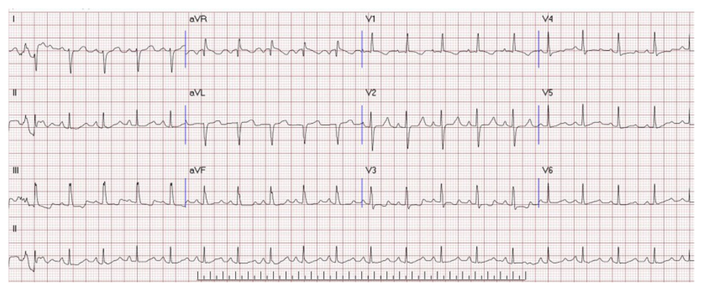
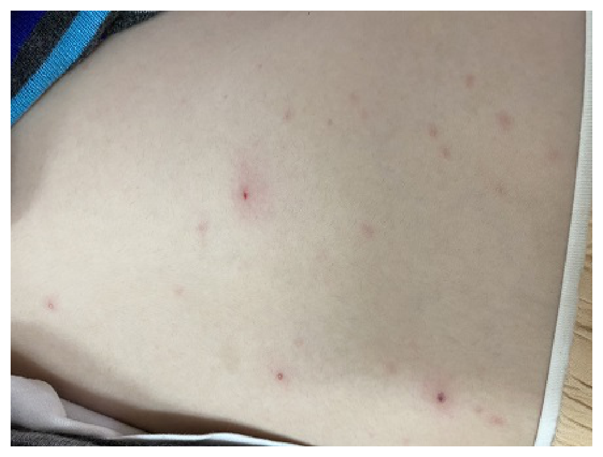
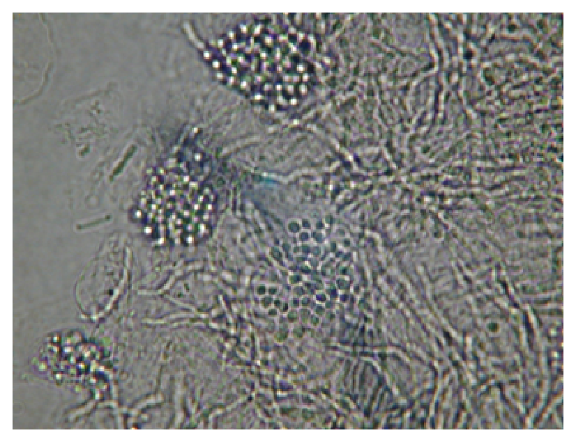
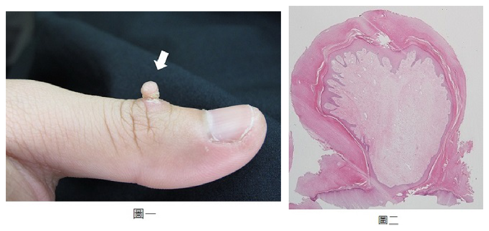
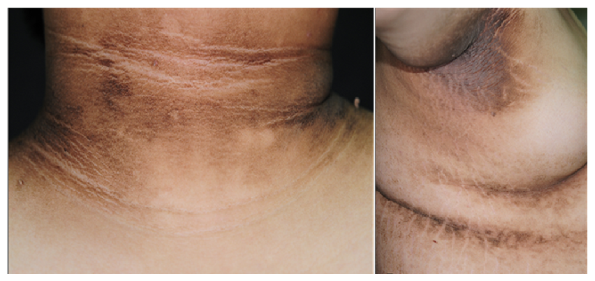
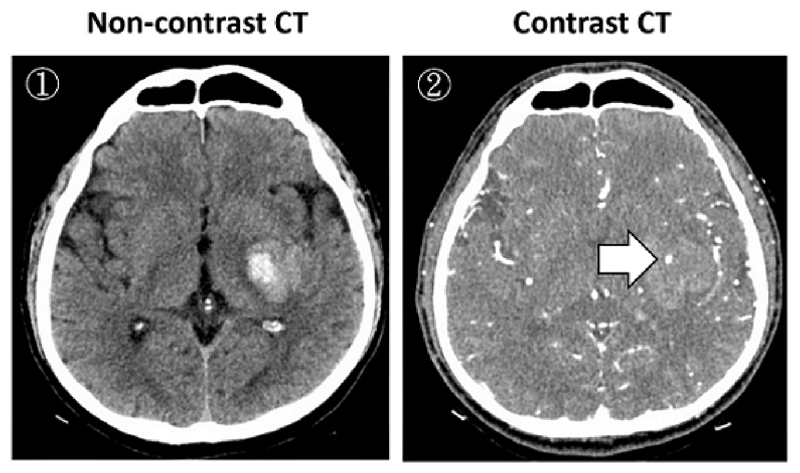
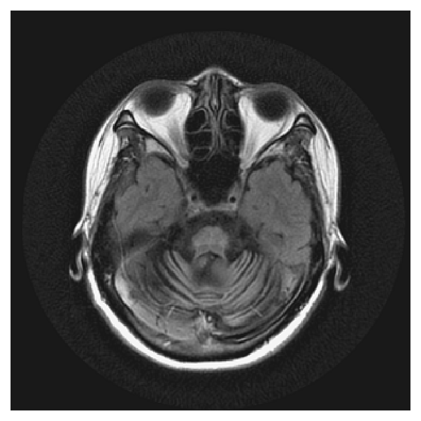
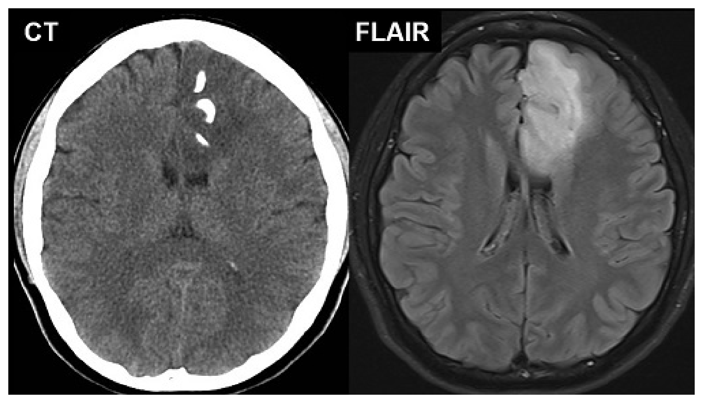
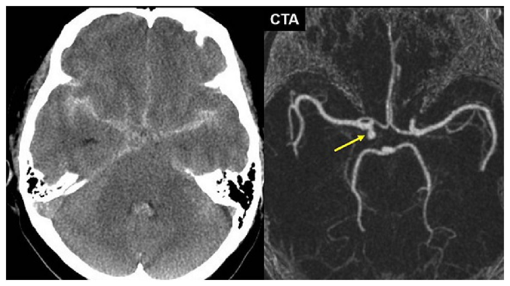

開卷有益 ／
醫師 ／ 醫學（四）（包括小兒科、皮膚科、神經科、精神科等科目及其相關臨床實例與醫學倫理） ／ 112 年第 1 次112 年第 1 次醫師醫學（四）（包括小兒科、皮膚科、神經科、精神科等科目及其相關臨床實例與醫學倫理）試題與答案
這一頁是民國 112 年第 1 次醫師醫學（四）（包括小兒科、皮膚科、神經科、精神科等科目及其相關臨床實例與醫學倫理）的整份歷屆試題，共 80 題，題目與標準答案出自考選部「國家考試試題及測驗式試題答案」開放資料，其中 80 題附有詳解。以下逐題列出題幹、選項與答案；要計時作答或記錄成績，請用線上練習。
考選部原始場次代碼：112020
線上作答這一科 →
全部 80 題
第 1 題
根據兒童健康手冊的內容，下列關於兒童口腔保健的注意事項，何者最不適當？
（A） 喝完母奶後，可用紗布幫寶寶清潔口腔、牙齦、舌頭及牙齒（B） 在長出第一顆牙後至一歲期間，就可以開始看牙醫，並每一年進行一次牙齒塗氟（C） 幼兒約12個月左右時，開始戒斷使用奶瓶餵奶，避免齲齒的發生（D） 3～6歲的兒童可以使用含氟量1000 ppm的牙膏刷牙答案：（B）
詳解與考點 正解：第一顆牙萌發後的預防性口腔照護。選項（B）雖正確提到應及早看牙醫，但「每一年一次牙齒塗氟」不符兒童口腔保健手冊的預防時程，因此為最不適當，選 B。塗氟頻率屬時效敏感的精確建議
A：喝完母奶後清潔口腔、牙齦、舌頭與牙齒，有助移除殘留物並建立口腔清潔習慣，敘述適當。
C：約 12 個月開始戒除奶瓶，可減少長時間含奶瓶與奶瓶齲齒風險，方向正確。
D：3～6 歲兒童可在成人協助與適量使用下，以含氟 1000 ppm 牙膏刷牙，是預防齲齒的適當作法。
本題考點：兒童口腔保健（pediatric oral health）包括乳牙萌發後的早期牙科就診、含氟牙膏（fluoride toothpaste）與專業塗氟（fluoride varnish）；預防建議的時程須依現行兒童健康手冊。
第 2 題
下列關於9個月的幼兒發展敘述，何者最可能為發展遲緩的警訊，須轉介做進一步評估？
（A） 還不會自己坐穩數分鐘（B） 還不會扶著站（C） 還不會由躺著坐起來（D） 還不會揮手再見答案：（A）
詳解與考點 正解：9 個月大的粗大動作里程碑；能獨坐一段時間是此年齡應已具備的核心能力，仍無法自行坐穩數分鐘要懷疑粗大動作發展遲緩並轉介評估，故選 A。
B：扶著站立的出現時間有個別差異，9 個月尚未會扶站本身較不如（A）具有警訊性。
C：由躺姿自行坐起通常在嬰兒期逐步出現，但 9 個月仍未完成此動作要結合其他動作與肌張力評估，單獨而言不如不能穩坐更具代表性。
D：揮手再見是社會互動與模仿的里程碑，9 個月仍可能尚在發展；若合併缺乏眼神接觸、互動或其他社交溝通異常才更須警覺。
本題考點：兒童發展篩檢（developmental surveillance）須依年齡評估粗大動作（gross motor skills）；9 個月仍無法穩坐是需要進一步評估的發展警訊（developmental red flag）。
第 3 題
下列何種情況與large anterior fontanel最不相關？
（A） hypothyroidism（B） achondroplasia（C） hypoxic event（D） prematurity答案：（C）
詳解與考點 正解：large anterior fontanel 與何者最不相關。甲狀腺低下、軟骨發育不全與早產均可和前囟門偏大或閉合延遲相關；單一缺氧事件並非前囟門偏大的典型原因，故選 C。
A：甲狀腺低下（hypothyroidism）可造成骨成熟與顱骨縫閉合延遲，因此可能出現較大前囟門。
B：軟骨發育不全（achondroplasia）影響骨骼發育，前囟門偏大是可見的臨床特徵之一。
D：早產兒（prematurity）的骨化與生長成熟度較低，前囟門大小的解讀須校正胎齡，與前囟門偏大有關。
本題考點：前囟門（anterior fontanel）大小反映顱骨生長與骨化；甲狀腺低下（hypothyroidism）、骨骼發育異常（skeletal dysplasia）與早產（prematurity）可造成前囟門偏大或閉合延遲。
第 4 題
孕期32週、出生體重1650公克的早產兒，4天大時發現腹脹、腸音減少、肚臍附近膚色變青紫。此病患最不可能的診斷為下列何者？
（A） necrotizing enterocolitis（B） intestinal perforation（C） intestinal volvulus（D） Hirschsprung disease答案：（D）
詳解與考點 正解：題幹是早產、低出生體重兒在生後第4天出現腹脹、腸音減少與腹壁青紫，首先要想到新生兒壞死性腸炎（necrotizing enterocolitis, NEC）及其腸壞死、穿孔等急腹症併發症；相較之下，先天性巨結腸症通常是出生後即有延遲排胎便、腹脹與排便困難的病史，與此典型的早產兒晚發性腸道缺血發炎表現最不相符，故選 D。
A：壞死性腸炎好發於早產與低出生體重兒，可在生後數日出現餵食不耐、腹脹、腸音減少及腹壁變色，與題幹高度吻合，故不是最不可能的診斷。
B：腸穿孔可為壞死性腸炎的嚴重併發症；腹壁發青紫與全身狀態惡化可提示腹膜腔病變，故仍必須納入鑑別。
C：腸扭轉（intestinal volvulus）可造成腸阻塞與腸缺血，進而出現腹脹、腸音減少甚至腹膜炎表現；雖然年齡與危險因子不如 NEC 典型，但不能因早產而排除。
本題考點：新生兒壞死性腸炎（necrotizing enterocolitis）好發於早產兒，表現為餵食不耐、腹脹與腸道發炎壞死；新生兒急腹症（neonatal acute abdomen）須同時警覺腸穿孔與腸扭轉。
第 5 題
下列關於新生兒黃疸（neonatal jaundice）及其相關疾病之敘述，何者最不適當？
（A） 新生兒黃疸會從臉部開始變黃，隨著膽紅素（bilirubin）數值變高，膚色變黃的部位向下延伸（B） 嚴重新生兒高膽紅素血症的危險因子包括出生後24小時內出現黃疸、母子血型不合、蠶豆症、出生週數超過41週等（C） 母乳哺餵之新生兒較容易有新生兒黃疸，可能原因是腸肝循環（enterohepatic circulation）增加造成（D） 核黃疸（kernicterus）是因未鍵結型（unconjugated）膽紅素沉積於基底核（basal ganglia）及腦幹神經核（brainstem nuclei）造成的答案：（B）
詳解與考點 正解：「嚴重新生兒高膽紅素血症的危險因子」。早產是重要危險因子，出生週數超過 41 週並不是典型增加未鍵結型高膽紅素血症風險的條件；因此（B）把危險因子方向寫反，為最不適當，故選 B。
A：黃疸常先在臉部肉眼可見，隨膽紅素升高向軀幹與四肢延伸，這是臨床估計黃疸範圍的現象；但是否需要處置仍須以血清膽紅素與日齡判定。
C：母乳哺餵可能因攝取不足或腸肝循環增加而使膽紅素上升，故較容易出現新生兒黃疸。它看似只是餵食方式差異，實際上腸道排出膽紅素減少會增加再吸收。
D：未鍵結型膽紅素可穿越血腦障壁並沉積於基底核與腦幹神經核，造成膽紅素腦病變與核黃疸（kernicterus），敘述正確。
本題考點：新生兒黃疸（neonatal jaundice）的高危險線索包括早發黃疸、溶血與早產；母乳相關黃疸（breastfeeding-associated jaundice）可與腸肝循環（enterohepatic circulation）增加有關；核黃疸（kernicterus）由未鍵結型膽紅素神經毒性造成。
第 6 題
關於先天性心臟病盛行率的描述，下列何者最不適當？
（A） 先天性心臟病在早產兒與死產胎兒中的比例，較一般健康新生兒來得高（B） 先天性心臟病絕大多數出生沒多久就會有症狀，超過90%在出生1個月之內會被診斷（C） 近年來先天性心臟病患者長大成人比例增加（D） 先天性心臟病仍是先天性畸形兒童中，最常見的死亡原因答案：（B）
詳解與考點 正解：題目問先天性心臟病（congenital heart disease）的盛行與診斷描述何者最不適當。許多病童在出生初期沒有明顯症狀，例如小型分流病灶、部分左側阻塞病灶或輕型瓣膜病變可在較晚期才被發現；因此「絕大多數出生沒多久就有症狀，超過 90% 在 1 個月內診斷」過度絕對，故選 B。
A：早產兒與死產胎兒的先天性心臟病比例較健康足月活產兒高，敘述符合先天異常在高風險族群較集中的現象。
C：隨診斷、介入治療與長期追蹤進步，更多先天性心臟病患者可存活至成人，故成人患者比例增加。
D：先天性心臟病仍是先天畸形相關兒童死亡的重要且常見原因，敘述方向正確。
本題考點：先天性心臟病（congenital heart disease）的臨床表現可延後出現，不能以新生兒期無症狀排除；成人先天性心臟病（adult congenital heart disease）族群因醫療進步而增加。
第 7 題
12歲女童因為學校健康檢查發現心電圖異常如圖，下列何種先天性心臟病最不可能？

（A） 心房中隔缺損（atrial septal defect, ASD）（B） 肺動脈瓣膜狹窄（pulmonary valvular stenosis）（C） 主動脈弓窄縮（coarctation of aorta）（D） 法洛氏四重症（tetralogy of Fallot）答案：（C）
詳解與考點 正解：心電圖中肢體導程 I 的 QRS 波主要向下，而 II、III、aVF 主要向上，顯示電軸右偏；胸前導程 V1、V2 的 R 波相對突出，符合右心室負荷增加的型態。心房中隔缺損、肺動脈瓣膜狹窄與法洛氏四重症皆可造成右心室壓力或容量負荷增加，較能解釋此圖。主動脈弓窄縮主要增加左心室後負荷，較常見左心室肥厚表現，因此最不可能，故選 C。
A：心房中隔缺損會造成左向右分流，使右心房與右心室容量負荷增加；較大的缺損可出現右軸偏移及右心室肥厚，與圖中的右心室負荷方向相符，故非答案。
B：肺動脈瓣膜狹窄使右心室必須對抗流出道阻力，造成右心室壓力負荷與右心室肥厚；右軸偏移及右胸前導程較高的 R 波可見於此情況，故非答案。
D：法洛氏四重症具有右心室流出道阻塞，長期可導致右心室肥厚與右軸偏移；其右心室負荷型態可與本圖相符，故非答案。
本題考點：心電圖電軸（QRS axis）——I 導程主要負向而下壁導程主要正向提示右軸偏移；右心室肥厚（right ventricular hypertrophy）常見右軸偏移與右胸前導程 R 波增高；先天性心臟病須依主要負荷所在的右心室或左心室進行鑑別。
第 8 題
有關法洛氏四重症（tetralogy of Fallot）病童發生缺氧性發作（blue spell or hypoxic spell）時，下列處置何者最不適當？
（A） 給與O2 supplement（B） 保持病童在knee-chest position（C） 給與鎮靜藥物，減少病童哭鬧（D） 給與支氣管擴張劑（β2 agonist）答案：（D）
詳解與考點 正解：法洛氏四重症缺氧性發作的核心是右向左分流突然加重，處置應提高全身血管阻力、降低哭鬧與改善氧合。β2 agonist 主要鬆弛支氣管平滑肌，不能矯正右心室流出道阻塞或右向左分流，故（D）最不適當。
A：補充氧氣可增加可用氧量，是缺氧性發作的支持性處置之一，故非答案。
B：膝胸臥位（knee-chest position）可增加全身血管阻力，減少右向左分流，是典型立即處置；它看似只是姿勢改變，實際上可改變分流的血流動力學。
C：鎮靜可減少哭鬧與交感刺激，避免惡化右心室流出道痙攣及缺氧循環，故屬適當處置方向。
本題考點：法洛氏四重症（tetralogy of Fallot）的缺氧性發作（hypercyanotic spell）源於右向左分流加重；膝胸臥位（knee-chest position）、氧氣與鎮靜用於改善氧合及分流。
第 9 題
10歲兒童血清抗B型肝炎表面抗體陽性（anti-HBs positive），下列何項血清檢查最能區別此抗體是疫苗或是曾經感染B型肝炎病毒（HBV）所產生的？
（A） 核心抗體IgM（anti-HBc IgM）（B） 核心抗體IgG（anti-HBc IgG）（C） 表面抗原（HBsAg）（D） 病毒去氧核糖核酸（HBV DNA）答案：（B）
詳解與考點 正解：anti-HBs 陽性可來自疫苗接種或自然感染後恢復；只有自然感染會產生核心抗體（anti-HBc）。anti-HBc IgG 持續存在，最能區別曾感染 HBV 與單純疫苗免疫，故選 B。
A：anti-HBc IgM 主要提示近期或急性 HBV 感染，若感染已久而恢復可轉為陰性，不能穩定辨識「曾經感染」。
C：HBsAg 陽性表示目前有 HBV 感染，不是辨別已具 anti-HBs 者免疫來源的最佳檢查；已恢復的自然感染者與疫苗接種者都可為陰性。
D：HBV DNA 用於判斷病毒複製與現症感染，恢復期自然感染者通常測不到，故不能區分兩種既往免疫來源。
本題考點：B 型肝炎血清學（hepatitis B serology）中，anti-HBs 表示免疫；anti-HBc IgG 表示曾自然感染；HBsAg 與 HBV DNA 反映現症感染或病毒複製。
第 10 題
4週大男嬰無特殊病史，因餵奶後嘔吐4天就醫。嘔吐物為凝乳塊、沒有膽汁、沒有血，沒有發燒、皮膚疹。身體診察顯示前囟門凹陷（sunken anterior fontanel）、心搏快、上腹摸到橄欖狀腫塊。下列何項是最適當的診斷檢查？
（A） 腹部電腦斷層檢查（computed tomographic scan of the abdomen）（B） 腹部超音波檢查（abdominal ultrasonography）（C） 腦部超音波檢查（brain ultrasonography）（D） 腦部電腦斷層檢查（computed tomographic scan of the brain）答案：（B）
詳解與考點 正解：4 週男嬰餵食後非膽汁性嘔吐、脫水與上腹橄欖狀腫塊，是肥厚性幽門狹窄（hypertrophic pyloric stenosis）的典型組合；腹部超音波可直接評估幽門肌肥厚，是最適當的診斷檢查，故選 B。
A：腹部電腦斷層有游離輻射且非此病的首選，超音波已能有效確認幽門病灶。
C：腦部超音波適用於經前囟評估顱內結構，無法解釋餐後非膽汁性嘔吐與腹部腫塊。
D：腦部電腦斷層可在懷疑顱內病因時考慮，但題幹已有明確腸胃道局部線索；嘔吐雖可能使人想到顱內壓升高，橄欖狀腫塊使此誘答不成立。
本題考點：肥厚性幽門狹窄（hypertrophic pyloric stenosis）常在出生後數週出現進行性非膽汁性嘔吐與脫水；腹部超音波（abdominal ultrasonography）為首選診斷工具。
第 11 題
下列嬰兒膽汁滯留症（cholestasis）中，何者屬於肝外（extrahepatic）膽汁滯留？
（A） 膽道閉鎖（biliary atresia）（B） 拜勒病（Byler disease）（C） 阿拉吉歐症候群（Alagille syndrome）（D） 新生兒肝炎（neonatal hepatitis）答案：（A）
詳解與考點 正解：肝外膽汁滯留（extrahepatic cholestasis）是膽汁在肝外膽道受阻。膽道閉鎖（biliary atresia）會造成肝外膽管進行性閉塞，因此屬肝外膽汁滯留，故選 A。
B：拜勒病（Byler disease）是進行性家族性肝內膽汁滯留，病變在肝內膽汁分泌與運輸，不屬肝外阻塞。
C：阿拉吉歐症候群（Alagille syndrome）以肝內膽管缺乏為特徵，屬肝內膽汁滯留。
D：新生兒肝炎主要造成肝細胞與肝內膽汁鬱積，並非肝外膽道阻塞。
本題考點：膽汁滯留（cholestasis）可區分肝外阻塞與肝內疾病；膽道閉鎖（biliary atresia）是嬰兒肝外膽道阻塞的重要診斷；阿拉吉歐症候群（Alagille syndrome）與進行性家族性肝內膽汁滯留屬肝內病因。
第 12 題
關於抗利尿激素不適當分泌症候群（syndrome of inappropriate antidiuretic hormone secretion, SIADH），下列敘述何者最不適當？
（A） 診斷SIADH需先排除腎病症候群、肝硬化、心衰竭、腎上腺或甲狀腺功能低下、利尿劑使用、脫水等造成低血鈉的原因（B） 在低血鈉與低血液滲透壓（osmolality）的情況下，尿液滲透壓大於100 mOsm/kg（C） 治療上主要為限制水分攝取，但不限制鈉鹽的攝取（D） 血液中尿酸（uric acid）與尿素氮（BUN）數值通常偏高答案：（D）
詳解與考點 正解：SIADH 的水滯留會造成稀釋性低血鈉與低血漿滲透壓，並使尿酸與 BUN 常因血液稀釋及排泄改變而降低，不是偏高；故（D）最不適當。
A：SIADH 是排除診斷，必須先排除低有效動脈血容量、腎臟、肝臟、心臟、腎上腺、甲狀腺與藥物等其他低血鈉原因，敘述正確。
B：低血漿滲透壓時若 ADH 未受適當抑制，尿液不會被充分稀釋，尿液滲透壓通常大於 100 mOsm/kg，符合 SIADH。
C：在無嚴重神經症狀的 SIADH，限制水分攝取是基本治療方向；不把日常鈉鹽一併嚴格限制可避免加重低血鈉，故非答案。
本題考點：抗利尿激素不適當分泌症候群（SIADH）造成低滲透壓性低血鈉與不適當濃縮尿；血清尿酸（uric acid）與尿素氮（BUN）常偏低，是稀釋性與腎臟處理改變的線索。
第 13 題
5歲的孩童主訴嚴重嘔吐及腹瀉4天，精神活力變差。腹瀉次數一天5～8次，已有兩天無法進食。心跳每分鐘150下，血壓72/50 mmHg，皮膚彈性（skin turgor）不佳，口腔黏膜乾燥。尿量明顯減少，血液鈉離子濃度175 mEq/L。下列敘述何者最不適當？
（A） 應儘快於24小時內矯正血鈉至正常值（B） 首先應儘快給與生理食鹽水20 mL/kg，於20分鐘內給完（C） 可使用低張溶液（如5% dextrose + half-normal saline）矯正其高血鈉與脫水（D） 治療高血鈉的併發症包括癲癇（seizure）甚至腦水腫（brain edema）答案：（A）
詳解與考點 正解：血鈉 175 mEq/L 合併低血壓、少尿與明顯脫水，是重度高血鈉性脫水。高血鈉矯正過快會使水移入腦細胞、引發腦水腫與癲癇，不能要求在 24 小時內回到正常，故選 A。確切補液配方與矯正速率需依連續血鈉、循環狀態及體液缺損調整，本題未提供完整監測資訊，相關數值處置存在不確定性。
B：此患兒有休克徵象，先以等張生理食鹽水快速補充血管內容量是合理的初期復甦方向，故非最不適當。
C：循環復甦後，可依計算後的水分缺損與血鈉趨勢使用適當較低張的維持或替代液緩慢矯正；看似與「高血鈉應給鹽水」矛盾，但關鍵是先救灌流、再受控補自由水。
D：高血鈉下降過快可造成腦水腫與癲癇，是治療時要避免的併發症，敘述正確。
本題考點：高血鈉性脫水（hypernatremic dehydration）必須先處理休克與灌流，再緩慢降低血鈉；過快矯正可導致腦水腫（cerebral edema）與癲癇（seizure）。
第 14 題
下列何種兒童腎臟疾病在腎臟移植後，腎臟疾病復發的機率最低？
（A） 先天性腎病症候群（congenital nephrotic syndrome）（B） 局部腎絲球硬化症（focal segmental glomerulosclerosis）（C） 第二型膜增生性腎小球腎炎（membranoproliferative glomerulonephritis type II）（D） IgA腎病變（IgA nephropathy）答案：（A）
詳解與考點 正解：腎臟移植後是否復發取決於原病是否仍有循環性或系統性致病機轉。先天性腎病症候群多為腎臟本身的遺傳性足細胞或腎小球濾過屏障缺陷，移植腎通常不帶有原本的基因缺陷，復發機率最低，故選 A。
B：局部腎絲球硬化症（focal segmental glomerulosclerosis）可能因循環性通透性因子影響移植腎而復發，故不屬最低。
C：第二型膜增生性腎小球腎炎與補體調節異常相關，系統性機轉仍可能作用於移植腎，復發風險較高。
D：IgA 腎病變可在移植腎再出現 IgA 沉積；它看似已移除原病腎臟，實際上異常黏膜免疫相關機轉仍存在。
本題考點：腎臟移植後復發（post-transplant recurrence）較常見於持續性系統性或循環性病因；遺傳性先天性腎病症候群（congenital nephrotic syndrome）通常較少在移植腎復發。
第 15 題
有關貝塞特氏病（Behçet disease），下列敘述何者最不適當？
（A） 嘴部潰瘍（oral ulcer）大多3～10天後修復無結痂（B） 生殖器的潰瘍容易留下結痂（C） 若影響眼睛造成葡萄膜炎，則後葡萄膜炎（posterior uveitis）為最常見（D） pathergy test陽性是指用細針刺皮膚後24～48小時後產生pustular reaction答案：（C）
詳解與考點 正解：官方答案為 C。貝塞特氏病的眼部發炎可同時累及前、後節，常呈全葡萄膜炎（panuveitis）；單稱後葡萄膜炎為最常見的典型表述不適切。惟葡萄膜炎的分布與定義有關，且（B）的中文用詞亦有爭議。
A：口腔阿弗他樣潰瘍通常可自行癒合且不留疤痕，敘述方向正確。
B：貝塞特氏病的生殖器潰瘍癒合後較常留疤痕，但選項寫「結痂」並不等同疤痕，用詞不夠精確。
D：pathergy test 是針刺後約 24～48 小時在刺入處出現丘疹或膿疱性反應。
本題考點：貝塞特氏病（Behçet disease）可見復發性口腔與生殖器潰瘍、葡萄膜炎與針刺反應（pathergy）；全葡萄膜炎（panuveitis）可同時累及前、後節。
第 16 題
有關Bruton agammaglobulinemia，下列敘述何者最不適當？
（A） 是B-lymphocyte的先天性免疫缺失的疾病（B） 主要是autosomal recessive，男女得病比例為1：1（C） 通常是出生後6～9個月開始有症狀（D） 定期輸注intravenous immunoglobulin（IVIG）是有效的治療方法答案：（B）
詳解與考點 正解：Bruton agammaglobulinemia 是 BTK 基因相關的 X 連鎖隱性免疫缺陷，主要影響男童，並非主要為常染色體隱性且男女比例 1:1；故（B）最不適當。
A：本病因 B 細胞成熟受阻而造成體液免疫缺陷，屬 B-lymphocyte 的先天性免疫缺失疾病。
C：母體 IgG 在出生後數月逐漸下降，因此患者常在約出生後 6～9 個月開始反覆細菌感染，敘述正確。
D：定期靜脈輸注免疫球蛋白（intravenous immunoglobulin, IVIG）可補充抗體並減少感染，是有效的長期治療。
本題考點：X 連鎖無丙種球蛋白血症（X-linked agammaglobulinemia, Bruton agammaglobulinemia）由 B 細胞成熟障礙造成；母體抗體消退後出現反覆感染；IVIG 是主要抗體替代治療。
第 17 題
氣喘急性發作時的肺功能檢查數值，下列何者最不可能降低？
（A） 尖峰呼氣流速值（peak expiratory flow, PEF）（B） 第一秒用力呼氣量（forced expiratory volume in 1 second, FEV1）（C） 第一秒流速容積比（FEV1/FVC, forced vital capacity）（D） 肺總容量（total lung capacity, TLC）答案：（D）
詳解與考點 正解：氣喘急性發作是阻塞型通氣障礙，氣流受限使 PEF、FEV1 與 FEV1/FVC 降低；同時空氣滯留可使肺總容量（TLC）正常或上升，而非最可能降低，故選 D。
A：尖峰呼氣流速值（PEF）反映大氣道呼氣流速，在急性支氣管收縮時會下降。
B：第一秒用力呼氣量（FEV1）受呼氣氣流受限影響而下降，是評估阻塞嚴重度的指標。
C：FEV1 的下降通常較 FVC 明顯，因此 FEV1/FVC 下降，符合阻塞型通氣障礙。
本題考點：氣喘（asthma）急性發作呈阻塞型肺功能；PEF、FEV1 與 FEV1/FVC 下降；空氣滯留（air trapping）可使 TLC 上升。
第 18 題
下列何種疾病通常不屬於性聯遺傳模式？
（A） A型血友病（hemophilia A）（B） 遺傳性球性紅血球症（hereditary spherocytosis）（C） 蠶豆症（G6PD deficiency）（D） 法布瑞氏症（Fabry disease）答案：（B）
詳解與考點 正解：遺傳性球性紅血球症多為常染色體顯性遺傳，少數可為常染色體隱性，通常不屬性聯遺傳；故選 B。
A：A 型血友病（hemophilia A）是典型 X 連鎖隱性遺傳疾病。
C：蠶豆症（G6PD deficiency）為 X 連鎖遺傳，男性較常表現臨床溶血。
D：法布瑞氏症（Fabry disease）是 X 連鎖溶小體儲積疾病，故屬性聯遺傳。
本題考點：性聯遺傳（sex-linked inheritance）常考 X 連鎖隱性疾病，如血友病 A、G6PD 缺乏症與法布瑞氏症；遺傳性球性紅血球症（hereditary spherocytosis）通常為常染色體顯性。
第 19 題
關於兒童缺鐵性貧血（iron-deficiency anemia），下列敘述何者最不適當？
（A） 延遲斷臍（delayed clamping of the umbilical cord）1至3分鐘，可降低嬰兒缺鐵性貧血的發生率（B） 青春期女生的缺鐵性貧血，常是因為月經出血與快速成長的關係（C） 未經治療的缺鐵性貧血，抽血可見低鐵蛋白（ferritin）與高運鐵蛋白飽和度（transferrin saturation）（D） 開始鐵劑補充約莫2至3天後，抽血可見網狀紅血球增多（reticulocytosis）答案：（C）
詳解與考點 正解：缺鐵性貧血時鐵儲存耗竭，ferritin 下降，血清鐵下降，運鐵蛋白飽和度也會下降；（C）將運鐵蛋白飽和度寫成升高，故最不適當。
A：延遲斷臍可增加新生兒的鐵儲備，因而有助降低嬰兒期缺鐵性貧血風險，敘述正確。
B：青春期女生的快速生長增加鐵需求，加上月經失血，確實是常見缺鐵原因。
D：開始補鐵後骨髓造血恢復，網狀紅血球會先增加，是治療反應的早期表現。
本題考點：缺鐵性貧血（iron-deficiency anemia）的典型檢驗為 ferritin 下降與運鐵蛋白飽和度（transferrin saturation）下降；網狀紅血球增多（reticulocytosis）可反映補鐵後造血反應。
第 20 題
有關化學治療藥物與其毒性的組合，下列何組較不相關？
（A） doxorubicin：心臟毒性（cardiotoxicity）（B） vincristine：出血性膀胱炎（hemorrhagic cystitis）（C） bleomycin：肺部纖維化（pulmonary fibrosis）（D） L-asparaginase：胰臟炎（pancreatitis）答案：（B）
詳解與考點 正解：vincristine 的代表性毒性是周邊神經病變、腸麻痺等神經毒性；出血性膀胱炎較典型與 cyclophosphamide 或 ifosfamide 相關，因此（B）較不相關，故選 B。
A：doxorubicin 為 anthracycline，可造成累積性心臟毒性（cardiotoxicity），配對正確。
C：bleomycin 的重要劑量相關毒性為肺損傷與肺部纖維化（pulmonary fibrosis），配對正確。
D：L-asparaginase 可造成胰臟炎（pancreatitis），也是治療期間須警覺的毒性。
本題考點：化學治療毒性（chemotherapy toxicity）配對：anthracycline 的心臟毒性、bleomycin 的肺纖維化、L-asparaginase 的胰臟炎；vincristine 以神經毒性為主。
第 21 題
6歲22公斤重的男童，發燒4天、臉色蒼白、精神活力差、意識混亂、呼吸淺快，血氧濃度95%、血壓60/25mmHg。下列處置何者最適當？
（A） 給與生理食鹽水450 mL，輸注時間為1小時（B） 進行快速誘導插管（rapid sequence intubation）（C） 立刻輸注大量血液製品（D） 每3分鐘給與一次強心劑（epinephrine）答案：（B）
詳解與考點 正解：若淺快呼吸與意識混亂已代表通氣失敗或無法保護氣道，快速誘導插管（rapid sequence intubation）是四項中最適切的處置；但須同步進行氧合、液體與升壓支持，並防範休克病人插管後心血管崩潰。
A：22 kg 兒童給予生理食鹽水 450 mL 約為 20 mL/kg，劑量本身合理；但以 1 小時輸完對嚴重休克的初始復甦過慢。
C：沒有明確外傷或出血證據時，不應立刻大量輸注血液製品。
D：每 3 分鐘給一次 epinephrine 是心跳停止復甦的給藥節奏，不是有脈搏休克的一般初始處置。
本題考點：兒童休克（pediatric shock）依 ABCDE 原則同步處理氣道、呼吸與循環；快速誘導插管（rapid sequence intubation）前後須進行血流動力最佳化；液體復甦（fluid resuscitation）應依病因與即時反應調整。
第 22 題
正常的呼吸速率範圍，早產兒應為每分鐘幾次？
（A） 15～20次（B） 25～30次（C） 40～70次（D） 75～90次答案：（C）
詳解與考點 正解：早產兒正常呼吸速率較年長兒童快，常用範圍為每分鐘 40～70 次，故選 C。
A：每分鐘 15～20 次較接近成人安靜呼吸範圍，對早產兒過慢。
B：每分鐘 25～30 次仍低於早產兒常見正常呼吸速率。
D：每分鐘 75～90 次持續出現時應考慮呼吸急促或呼吸窘迫，而非常態範圍。
本題考點：新生兒呼吸速率（neonatal respiratory rate）高於成人；早產兒（preterm infant）安靜時常用正常範圍為每分鐘 40～70 次；持續呼吸急促須評估呼吸窘迫。
第 23 題
1歲大男孩，咳嗽流鼻水2天，今晚咳嗽變嚴重，體溫38.2℃且聲音沙啞，出現咳嗽如狗吠聲及費力呼吸，下列何者為最可能的診斷？
（A） 氣喘（asthma）（B） 細支氣管炎（bronchiolitis）（C） 異物吸入（foreign body aspiration）（D） 哮吼（croup）答案：（D）
詳解與考點 正解：幼兒先有上呼吸道感染症狀，接著出現聲音沙啞、犬吠樣咳嗽與費力呼吸，是哮吼（croup）的典型上呼吸道阻塞表現，故選 D。
A：氣喘以反覆喘鳴與下呼吸道呼氣性氣流受限為主，不會典型造成犬吠樣咳嗽與聲音沙啞。
B：細支氣管炎常見於嬰幼兒，典型是喘鳴、呼吸急促與下呼吸道細支氣管阻塞，非犬吠樣咳嗽。
C：異物吸入常為突然發作且可有單側呼吸音減弱；本題有先行感冒、發燒與沙啞，較符合感染性哮吼。它看似也會費力呼吸，但發作脈絡與咳嗽音質不同。
本題考點：哮吼（croup）多在病毒性上呼吸道感染後出現犬吠樣咳嗽、沙啞與吸氣性喘鳴；需與氣喘（asthma）、細支氣管炎（bronchiolitis）及異物吸入鑑別。
第 24 題
下列何種情況最不可能造成中樞性尿崩症（central diabetes insipidus）？
（A） 蘭格罕細胞組織球增生症（Langerhans cell histiocytosis）（B） 下視丘神經手術術後（C） Wolfram氏症候群（Wolfram syndrome）（D） 高血鈣（hypercalcemia）答案：（D）
詳解與考點 正解：中樞性尿崩症（central diabetes insipidus）是下視丘或後葉抗利尿激素（ADH）生成、運送或釋放不足。高血鈣會降低腎臟對 ADH 的反應，造成的是腎因性尿崩症（nephrogenic diabetes insipidus），不是中樞性尿崩症，故選 D。
A：蘭格罕細胞組織球增生症可侵犯下視丘－腦下垂體軸，是兒童中樞性尿崩症的重要病因。
B：下視丘神經手術可能損傷 ADH 相關路徑，術後可造成中樞性尿崩症。
C：Wolfram 氏症候群可合併尿崩症，且屬中樞性 ADH 缺乏的鑑別病因之一。
本題考點：中樞性尿崩症（central diabetes insipidus）源於 ADH 缺乏，病灶常在下視丘－腦下垂體軸；腎因性尿崩症（nephrogenic diabetes insipidus）源於腎臟對 ADH 反應不良，高血鈣是其可逆原因之一。
第 25 題
先天性甲狀腺功能低下症（congenital hypothyroidism）若區分為甲狀腺發育不全（dysgenesis）及合成異常（dyshormonogenesis）兩大類病因，下列那一選項的致病病因與其他三者最不相同？
（A） Pendred syndrome（B） lingual thyroid（C） iodide transport defect（D） iodide organification defect答案：（B）
詳解與考點 正解：要在先天性甲狀腺功能低下症的兩類病因中找出不同類別。lingual thyroid 是胚胎期甲狀腺未正常下降至頸部的異位甲狀腺，屬甲狀腺發育不全（dysgenesis）；其餘皆是甲狀腺激素合成途徑的缺陷，故選 B。
A：Pendred syndrome 常涉及碘離子運輸與有機化障礙，屬甲狀腺激素合成異常（dyshormonogenesis），不是甲狀腺位置或發育的缺陷。
C：iodide transport defect 是碘離子無法適當進入甲狀腺濾泡細胞，影響激素合成，屬合成異常。
D：iodide organification defect 是碘無法被有效有機化並併入甲狀腺激素前驅物，亦屬合成異常。
本題考點：先天性甲狀腺功能低下症（congenital hypothyroidism）；甲狀腺發育不全（thyroid dysgenesis）包括異位甲狀腺；甲狀腺激素合成異常（dyshormonogenesis）包括碘運輸與有機化缺陷。
第 26 題
10歲男童，過去無病史且完整接種常規疫苗。近3日微燒，臉部及軀幹處出現10餘顆水泡及紅疹，常因搔癢抓破水泡，疹子型態如圖示，其班上同學也有類似疹子。最可能的診斷為何？

（A） varicella（B） scarlet fever（C） hand-foot-mouth disease（D） coronavirus disease 2019（COVID-19）答案：（A）
詳解與考點 正解：圖中可見軀幹散在紅色丘疹與小水泡，部分病灶已因搔抓破損；配合微燒、明顯搔癢、同班同學有類似皮疹，以及病灶以臉部與軀幹為主，最符合水痘（varicella）。水痘的典型特徵是皮疹分批出現，紅斑、丘疹、水泡與結痂可同時存在，且軀幹分布通常比四肢明顯，故選 A。
B：猩紅熱（scarlet fever）由 A 群鏈球菌感染所致，常伴咽喉痛與發燒，皮疹多為瀰漫、觸感粗糙如砂紙的細小紅疹，而非圖示這種散在、可見水泡及抓破處的病灶。
C：手足口病（hand-foot-mouth disease）雖也可有水泡，但典型分布在口腔、手掌、足底與臀部；本題圖中的病灶以軀幹為主，且未提及口腔潰瘍或手足病灶，較不符合。
D：COVID-19 的皮膚表現多樣但不是以兒童群聚、搔癢性散在水泡為典型表現；本題的皮疹形態與分布更符合水痘病毒造成的出疹。
本題考點：水痘（varicella）由水痘帶狀疱疹病毒（varicella-zoster virus, VZV）引起，常見發燒與搔癢性水泡疹；辨識重點是病灶分批出現、不同演變階段可同時存在，以及以軀幹為主的向心性分布；鑑別診斷須與猩紅熱（scarlet fever）的砂紙樣紅疹及手足口病（hand-foot-mouth disease）的口手足分布區分。
第 27 題
關於兒童常見細菌性感染症，下列「疾病－常見細菌」的組合何者最不適當？
（A） 皮膚膿瘍－金黃色葡萄球菌（Staphylococcus aureus）（B） 猩紅熱（scarlet fever）－A群鏈球菌（group A Streptococcus）（C） 泌尿道感染－沙門氏細菌（Salmonella）（D） 骨關節炎－金黃色葡萄球菌（Staphylococcus aureus）答案：（C）
詳解與考點 正解：兒童常見細菌感染的典型病原配對。泌尿道感染最常見的病原是腸道革蘭陰性菌，尤其 Escherichia coli；Salmonella 雖可在特殊情況造成泌尿道感染，卻不是常見配對，故最不適當的是 C。
A：皮膚膿瘍常由金黃色葡萄球菌（Staphylococcus aureus）造成，尤其是化膿性皮膚軟組織感染，配對適當。
B：猩紅熱（scarlet fever）是產毒素的 A 群鏈球菌（group A Streptococcus）感染所致，為典型組合。
D：兒童的化膿性骨關節感染常見金黃色葡萄球菌（Staphylococcus aureus），配對適當。
本題考點：兒童常見細菌感染（common pediatric bacterial infections）；泌尿道感染（urinary tract infection）最常見病原為 Escherichia coli；金黃色葡萄球菌（Staphylococcus aureus）是膿瘍與骨關節感染的重要病原。
第 28 題
9個月大女嬰發燒、躁動不安5天後住院。經給與ampicillin及gentamicin 2天後，發燒持續不退，雙腳與腹部出現一些紅疹，卡介苗結痂處出現發紅的變化。接下來，下列何項是最適當的檢查？
（A） 皮膚結核菌素測試（B） 腦部電腦斷層攝影（C） 心臟超音波（D） Widal試驗答案：（C）
詳解與考點 正解：持續高燒、紅疹與卡介苗接種處發紅是川崎病（Kawasaki disease）的重要線索。川崎病須評估冠狀動脈病變，因此最適當的檢查是心臟超音波，故選 C；皮疹在抗生素後出現看似可想到藥物疹，但無法解釋卡介苗痂皮處的再度發炎與持續高燒。
A：皮膚結核菌素測試用於評估結核菌感染，不能評估川崎病最重要的冠狀動脈併發症。
B：腦部電腦斷層攝影不是此臨床表現的優先檢查，且不能取代冠狀動脈評估。
D：Widal 試驗與傷寒相關，對此以黏膜皮膚與接種處變化為主的川崎病線索不具診斷價值。
本題考點：川崎病（Kawasaki disease）；卡介苗接種處紅腫（BCG scar reactivation）是支持線索；心臟超音波（echocardiography）用於冠狀動脈評估。
第 29 題
關於妥瑞氏症（Tourette disorder）或抽動症（tic disorder），下列敘述何者最不適當？
（A） 發病年齡（age of onset）須小於18歲（B） 病患有症狀時老師須提醒他不要發出聲音或有動作（C） 並非所有病患都需要藥物治療（D） 一般妥瑞氏症或抽動症的臨床嚴重度會在18～20歲以後大幅改善答案：（B）
詳解與考點 正解：題目問最不適當的處置觀念。抽動是不自主症狀，要求老師在孩子有症狀時提醒他不要發聲或動作，容易增加注意、壓力與羞恥感，反而可能加劇抽動，故選 B。
A：妥瑞氏症與抽動症的起病須在 18 歲以前，敘述符合診斷條件。
C：症狀輕微或未造成明顯功能損害者可接受衛教、行為介入與追蹤，並非所有病人都需要藥物治療。
D：抽動嚴重度常在青春期前後較明顯，許多病人於晚青春期至成年早期改善，因此此敘述適當。
本題考點：妥瑞氏症（Tourette disorder）；抽動（tic）為不自主動作或發聲；行為處置應避免責備或強迫壓抑症狀。
第 30 題
有關隱形脊柱裂（occult spinal bifida或occult spinal dysraphism），下列敘述何者最不適當？
（A） 通常是指椎體（vertebral body）中線的缺損，但未合併脊髓或腦膜膨出（B） 病灶上如果有合併毛髮、血管瘤，因為大多數患者無症狀，所以不需做影像學檢查（C） 病灶處可能合併有皮膚凹陷、脂肪瘤、血管瘤或一撮毛髮等特徵，但無脊髓外露（D） 常見在第五節腰椎（L5）至第一節薦椎（S1）的位置答案：（B）
詳解與考點 正解：官方答案為 B。隱性脊柱裂合併皮膚凹陷、脂肪瘤、血管瘤或毛髮叢等中線皮膚標記時，要懷疑潛藏性脊髓發育異常（occult spinal dysraphism）；即使無症狀仍應進一步影像評估，因此（B）最不適當。惟（A）的「椎體」用詞也不精確。
A：隱性脊柱裂的典型骨性缺陷是後方椎弓中線閉合不全，而非椎體；命題顯然將其視為基本定義的概括。
C：局部皮膚凹陷、脂肪瘤、血管瘤與毛髮叢是皮膚警訊；未見脊髓外露仍可能有深部異常。
D：病灶常見於腰薦椎交界處，L5 至 S1 是常見位置。
本題考點：隱性脊柱裂（occult spinal bifida）常見後方椎弓閉合不全；潛藏性脊髓發育異常（occult spinal dysraphism）可由中線皮膚標記提示；影像評估用於確認深部異常。
第 31 題
10歲大的男童，因為身上多處色素斑被帶至門診，身體診察發現軀幹以及四肢有7顆直徑超過5 mm大小不一的咖啡牛奶斑（café-au-lait spots），右上肢內側可摸到兩顆直徑約2 cm的軟瘤。有關此兒童的敘述何者最適當？
（A） 合併學習障礙的機率比一般學童多（B） 常合併視網膜色素沉著不全（C） 常合併青光眼（D） 常合併心臟腫瘤答案：（A）
詳解與考點 正解：7 顆超過 5 mm 的咖啡牛奶斑加上可觸及的軟瘤，最符合第一型神經纖維瘤病（neurofibromatosis type 1, NF1）。NF1 常合併學習、注意力與認知困難，因此（A）最適當，故選 A。
B：視網膜色素沉著不全較不是 NF1 的典型相關表現；NF1 較具代表性的眼部病灶是虹膜 Lisch nodules 與視神經路徑膠質瘤。
C：青光眼可在少數伴眼眶顏面病灶者出現，但不是此病最常見、最適合作為一般性敘述的合併症。
D：心臟腫瘤較典型地聯想到結節性硬化症（tuberous sclerosis complex），不是 NF1 的常見特徵。
本題考點：第一型神經纖維瘤病（neurofibromatosis type 1）；咖啡牛奶斑（café-au-lait macules）與神經纖維瘤（neurofibromas）；學習障礙（learning disability）是常見的神經發展共病。
第 32 題
關於兒童沙門氏桿菌腸胃炎，下列敘述何者最不適當？
（A） 潛伏期約2～5天，平均為72小時（B） 臨床症狀有嘔吐、腹絞痛，腹痛位置在肚臍周圍和下腹，伴隨輕度到嚴重的水瀉，糞便有時有黏液和血絲（C） 沙門氏桿菌腸胃炎併發暫時性菌血症（transient bacteremia）的機率約1～5%（D） 鐮刀型貧血症（sickle cell anemia）的兒童罹患沙門氏桿菌腸胃炎，需要使用抗生素治療答案：（A）
詳解與考點 正解：沙門氏桿菌腸胃炎的潛伏期。非傷寒性沙門氏菌腸胃炎通常在受污染食物後較短時間發病，並非平均 72 小時、可長達 2～5 天的典型描述，因此（A）最不適當，故選 A。
B：嘔吐、腹絞痛、水瀉，以及可帶黏液或血絲的腹瀉，均可見於沙門氏桿菌腸胃炎，敘述適當。
C：腸胃炎大多局限於腸道，但少數兒童可出現短暫菌血症；此選項的低比例概念符合臨床風險判斷。
D：鐮刀型貧血症兒童有侵襲性沙門氏菌感染與骨髓炎風險，感染時較需要審慎評估並使用抗生素，不宜僅以一般自限性腸胃炎處理。
本題考點：非傷寒性沙門氏菌腸胃炎（nontyphoidal Salmonella gastroenteritis）；潛伏期（incubation period）；高風險宿主（high-risk host）如鐮刀型貧血症可能需要抗生素治療。
第 33 題
有關粒線體DNA（mtDNA）與其所造成的疾病，下列敘述何者最不適當？
（A） mtDNA突變的機率高於細胞核DNA（B） 粒線體疾病的表徵多為影響神經肌肉的症狀（C） mtDNA上tRNA的基因點突變（m.3243A＞G）會造成MELAS（D） Leber hereditary optic neuropathy（LHON）男性發病機率低於女性答案：（D）
詳解與考點 正解：Leber hereditary optic neuropathy（LHON）雖由粒線體 DNA 突變造成，但臨床外顯率男性高於女性；（D）反稱男性發病機率較低，方向顛倒，故最不適當的是 D。
A：粒線體 DNA 缺乏核 DNA 的部分保護與修復機制，突變率較高，敘述正確。
B：高耗能組織最易受粒線體功能障礙影響，故神經與肌肉症狀是粒線體疾病的常見表現。
C：mtDNA 的 tRNA 基因 m.3243A>G 突變是 MELAS 的典型分子病因，敘述正確。
本題考點：粒線體 DNA（mitochondrial DNA, mtDNA）；MELAS（mitochondrial encephalomyopathy, lactic acidosis, and stroke-like episodes）；Leber 遺傳性視神經病變（Leber hereditary optic neuropathy, LHON）的男性外顯率較高。
第 34 題
有關乾癬（psoriasis）與脂漏性皮膚炎（seborrheic dermatitis）的敘述與比較，何者錯誤？
（A） 皮膚切片不一定可以區分乾癬與脂漏性皮膚炎（B） 脂漏性皮膚炎較常伴隨關節炎一起發生（C） 乾癬患者若有human immunodeficiency virus（HIV）感染，可能以乾癬病灶嚴重惡化作為臨床表徵（D） human immunodeficiency virus（HIV）感染者若有脂漏性皮膚炎，其脂漏性皮膚炎會比較嚴重答案：（B）
詳解與考點 正解：乾癬與脂漏性皮膚炎的全身性關聯。關節炎是乾癬關節炎（psoriatic arthritis）的重要共病，並非脂漏性皮膚炎較常伴隨的表現，因此錯誤的是 B。
A：兩者在臨床與病理上可有重疊，皮膚切片未必每次都能明確區分，敘述適當。
C：HIV 感染可使乾癬病灶變得嚴重或不典型，乾癬惡化可成為臨床線索，敘述正確。
D：HIV 感染者可出現較嚴重或難治的脂漏性皮膚炎，敘述正確。
本題考點：乾癬（psoriasis）與乾癬關節炎（psoriatic arthritis）；脂漏性皮膚炎（seborrheic dermatitis）；human immunodeficiency virus（HIV）感染可使兩類皮膚病加劇。
第 35 題
對於刺激性接觸性皮膚炎（irritant contact dermatitis）與過敏性接觸性皮膚炎（allergic contact dermatitis）的比較，下列敘述何者較不適當？
（A） 刺激性接觸性皮膚炎在接觸後症狀發作的速度較快（B） 過敏性接觸性皮膚炎較可能會擴散至暴露處周圍甚至全身（C） 過敏性接觸性皮膚炎是屬於第四型過敏反應（type IV hypersensitivity reaction）（D） 抽血驗過敏原是診斷刺激性接觸性皮膚炎的主要方法答案：（D）
詳解與考點 正解：刺激性接觸性皮膚炎主要靠暴露史、分布與排除其他病因判斷，並沒有以抽血驗過敏原作為主要診斷方法；若懷疑過敏性接觸性皮膚炎，較具代表性的檢查是貼布試驗（patch test），故較不適當的是 D。
A：刺激性接觸性皮膚炎是直接毒性傷害，接觸後可較快出現灼熱或紅斑，敘述適當。
B：過敏性接觸性皮膚炎可超出原始接觸區，這使它看似與刺激性皮膚炎相近，卻是鑑別的重要特徵。
C：過敏性接觸性皮膚炎由 T 細胞介導，屬第四型過敏反應（type IV hypersensitivity reaction），敘述正確。
本題考點：刺激性接觸性皮膚炎（irritant contact dermatitis）；過敏性接觸性皮膚炎（allergic contact dermatitis）；貼布試驗（patch test）用於辨識延遲型接觸過敏原。
第 36 題
下列有關傳染性軟疣（molluscum contagiosum）之敘述，何者錯誤？
（A） 在異位性皮膚炎等皮膚屏障不好的狀況下，可能會有較多且較持久的病灶（B） 是人類乳突瘤病毒（human papilloma virus）透過皮膚接觸感染造成（C） 有時可先觀察不治療，病人有機會靠自己的免疫力清除此病毒感染的病灶（D） 可考慮藥物治療，如使用imiquimod cream答案：（B）
詳解與考點 正解：傳染性軟疣的病原是痘病毒科的 molluscum contagiosum virus，不是人類乳突瘤病毒（human papilloma virus），故錯誤的是 B。兩者都可經皮膚接觸傳播，容易造成病毒分類混淆。
A：異位性皮膚炎造成皮膚屏障受損，病灶可較多、較廣泛且較持久。
C：傳染性軟疣可自行消退，免疫正常者在適當情況可觀察而不立即治療。
D：imiquimod cream 曾被 off-label 使用，但兒童試驗未證實療效且可能造成局部不良反應，現今通常不建議常規使用；此處置爭議不改變（B）病原誤認的錯誤。
本題考點：傳染性軟疣（molluscum contagiosum）由痘病毒（poxvirus）造成；異位性皮膚炎（atopic dermatitis）的皮膚屏障缺陷可促進病灶擴散；imiquimod 不宜作為兒童傳染性軟疣的常規治療。
第 37 題
35歲女性體育老師主訴背上出現許多略癢的白色斑塊，視診發現其表面有局部脫屑，KOH檢查的結果如圖所示，下列敘述何者正確？

（A） 此病人應為念珠菌（candida）感染（B） 若病人有足癬（tinea pedis），則其身上的病灶與足癬應為同一致病原（C） 若使用含有ketoconazole成分的外用藥，對於此疾病沒有療效（D） 同樣的致病原也可能侵犯毛囊造成毛囊發炎答案：（D）
詳解與考點 正解：背部略癢、帶細屑的白色斑塊，合併圖中可見短而彎曲的菌絲及成群圓形酵母菌孢子，呈典型「義大利麵與肉丸（spaghetti and meatballs）」外觀，符合糠秕馬拉色菌（Malassezia）引起的花斑癬（tinea versicolor）。同一菌種在毛囊內過度增生時，確可造成馬拉色菌毛囊炎（Malassezia folliculitis），故選 D。
A：念珠菌（Candida）常見假菌絲與出芽酵母菌，較常侵犯潮濕皺摺處、黏膜或指甲；本題的背部細屑斑塊及圖示短彎菌絲合併圓形孢子，較符合 Malassezia，而非 Candida。
B：足癬通常由皮癬菌（dermatophytes）感染；花斑癬則由皮膚常在菌 Malassezia 過度生長所致。兩者可同時存在，但並不表示身上病灶與足癬必為同一致病原。
C：ketoconazole 為唑類抗黴菌藥，可抑制真菌細胞膜麥角固醇（ergosterol）合成；外用製劑可用於局限性的花斑癬，因此稱其沒有療效並不正確。
本題考點：花斑癬（tinea versicolor）由糠秕馬拉色菌（Malassezia）造成，KOH 可見短彎菌絲與成群酵母菌孢子的「義大利麵與肉丸」形態；馬拉色菌亦可造成毛囊炎（Malassezia folliculitis）；唑類抗黴菌藥（azole antifungals）可作為治療選擇。
第 38 題
45歲男性，自5個月前在右手拇指出現一個無症狀的淡紅色硬實結節（如圖一所示），X光攝影檢查未發現骨骼病變。皮膚手術切除病灶之病理檢查結果如附圖二。此患者最可能的診斷為下列何者？

（A） 尋常疣（verruca vulgaris）（B） 基底細胞癌（basal cell carcinoma）（C） 後天性指纖維角化瘤（acquired digital fibrokeratoma）（D） 角化棘皮瘤（keratoacanthoma）答案：（C）
詳解與考點 正解：右手拇指的無症狀、淡紅色硬實小結節呈指狀突起，圖二可見病灶中央為纖維性結締組織核心、外覆增厚的表皮，符合後天性指纖維角化瘤（acquired digital fibrokeratoma）。此病常發生於成人手指或足趾，為良性的角化性纖維性腫瘤，X光未見骨骼病變亦與之相符，故選 C。
A：尋常疣（verruca vulgaris）雖常長在手指，但通常表面粗糙、可見疣狀角化；組織學應有乳頭狀增生、角化及病毒感染相關的空泡化角質細胞，而非圖二所示以纖維性核心為主的指狀病灶。
B：基底細胞癌（basal cell carcinoma）多見於長期日曬部位，病理會見基底樣細胞巢及周邊柵欄狀排列，與本圖的表皮包覆纖維性核心不符；其發生於手指且呈此種良性外觀也較不典型。
D：角化棘皮瘤（keratoacanthoma）常快速長成中央凹陷、充滿角質栓的火山口樣結節；病理重點是中央角質栓與杯狀表皮增生，不是狹長的纖維血管核心。
本題考點：後天性指纖維角化瘤（acquired digital fibrokeratoma）是成人手足指趾常見的良性纖維性腫瘤；典型病理為增厚表皮包覆中央纖維性結締組織核心；須與尋常疣（verruca vulgaris）的病毒性疣狀表皮增生及角化棘皮瘤（keratoacanthoma）的中央角質栓區分。
第 39 題
關於全身性硬化症（systemic sclerosis）的敘述，下列何者錯誤？
（A） 患者常伴有Raynaud phenomenon（B） 常出現heliotrope sign（C） 可伴有食道吞嚥困難（D） 血清ANA檢查常呈陽性答案：（B）
詳解與考點 正解：heliotrope sign 是上眼瞼紫紅色皮疹，為皮肌炎（dermatomyositis）的典型皮膚表現，不是全身性硬化症（systemic sclerosis）的常見表現，故錯誤的是 B。
A：Raynaud phenomenon 常先於或伴隨全身性硬化症，反映小血管功能異常，敘述正確。
C：食道平滑肌受累可造成胃食道逆流與吞嚥困難，是全身性硬化症的常見內臟表現。
D：全身性硬化症患者常有 antinuclear antibody（ANA）陽性，敘述適當。
本題考點：全身性硬化症（systemic sclerosis）；Raynaud phenomenon 與食道蠕動障礙；heliotrope sign 是皮肌炎（dermatomyositis）的線索。
第 40 題
自體免疫水疱病所產生皮膚表皮的裂解，下列何者最淺層？
（A） pemphigus vulgaris（B） pemphigus foliaceus（C） pemphigus vegetans（D） bullous pemphigoid答案：（B）
詳解與考點 正解：自體免疫水疱病中，pemphigus foliaceus 的自體抗體主要破壞表皮較上層的 desmoglein 1，裂解位於角質層下，為題目各選項中最淺層，故選 B。
A：pemphigus vulgaris 主要累及 desmoglein 3，裂解多在表皮基底層上，位置較 pemphigus foliaceus 深。
C：pemphigus vegetans 是 pemphigus vulgaris 的臨床變異型，裂解層次同屬較深的表皮內。
D：bullous pemphigoid 的裂解在表皮下（subepidermal），形成較緊繃的水疱，並非最淺層。
本題考點：天疱瘡（pemphigus）；pemphigus foliaceus 的角質層下裂解（subcorneal acantholysis）；bullous pemphigoid 的表皮下水疱（subepidermal blister）。
第 41 題
19歲男性，約5年前開始在頸部、腋下及其他皺褶處之皮膚變厚變黑，如圖所示，最可能的診斷為何？

（A） 黑癬（tinea nigra）（B） 黑色棘皮症（acanthosis nigricans）（C） 硬皮症（scleroderma）（D） 發炎後色素沉澱（post-inflammatory hyperpigmentation）答案：（B）
詳解與考點 正解：圖中可見頸部與腋下等皮膚皺褶處呈天鵝絨樣增厚的深褐色色素沉著，病史亦為青少年起逐漸出現於頸部、腋下及其他皺褶處，這是黑色棘皮症（acanthosis nigricans）的典型表現，故選 B。此表現常與胰島素阻抗、肥胖或內分泌異常相關；若是突然快速出現且範圍廣，才須留意惡性腫瘤相關的黑色棘皮症。
A：黑癬（tinea nigra）是由真菌造成的表淺感染，通常在手掌或足底形成局限、界線相對清楚的褐黑色斑，不會造成圖中頸部與腋下皺褶處廣泛且增厚如天鵝絨的皮膚改變。
C：硬皮症（scleroderma）以皮膚緊繃、硬化與活動受限為主要特徵，可伴隨色素改變，但不符合圖中集中於皺褶處的絨毛樣增厚與深色沉著。
D：發炎後色素沉澱（post-inflammatory hyperpigmentation）發生於原先有皮膚炎、外傷或感染的部位之後，通常依循既有發炎病灶分布；本題沒有先前發炎病史，且圖中的皺褶增厚外觀更符合黑色棘皮症。
本題考點：黑色棘皮症（acanthosis nigricans）為皮膚皺褶處的對稱性、色素加深與天鵝絨樣增厚；胰島素阻抗（insulin resistance）是常見相關機轉；須與局限於手掌、足底的黑癬（tinea nigra）及發炎後色素沉澱（post-inflammatory hyperpigmentation）鑑別。
第 42 題
承上題，下列何者為此疾病最常見的相關致病因子？
（A） 藥物（B） 肥胖（C） 癌症（D） 感染答案：（B）
詳解與考點 正解：承上題的頸部、腋下與皺褶處皮膚增厚變黑，診斷為黑色棘皮症（acanthosis nigricans）。年輕人最常見的相關致病背景是肥胖所伴隨的胰島素阻抗，故選 B。
A：某些藥物可引發或加重黑色棘皮症，但不是此年齡層最常見的相關因子。
C：惡性腫瘤相關黑色棘皮症是重要警訊，但較常見於成人突然、快速出現且廣泛的病灶；不能取代肥胖作為本題青年的最常見關聯。
D：感染不是黑色棘皮症的典型致病或相關因子。
本題考點：黑色棘皮症（acanthosis nigricans）；肥胖（obesity）與胰島素阻抗（insulin resistance）；惡性腫瘤相關黑色棘皮症（malignant acanthosis nigricans）需依年齡與病程辨識。
第 43 題
下列有關尋常性魚鱗癬（ichthyosis vulgaris）之敘述，何者錯誤？
（A） 是最常見的魚鱗癬疾病，與絲聚蛋白（filaggrin）基因突變有關（B） 手掌掌紋會相較於一般人來的多（hyperlinearity）（C） 通常皮膚症狀會在四肢的屈側及關節內側特別明顯（D） 常合併毛孔角化症（keratosis pilaris）或異位性皮膚炎（atopic dermatitis）答案：（C）
詳解與考點 正解：尋常性魚鱗癬的鱗屑通常以四肢伸側較明顯，屈側與關節皺褶常相對保留；（C）反稱屈側及關節內側特別明顯，故為錯誤敘述。
A：尋常性魚鱗癬是最常見的魚鱗癬，與絲聚蛋白（filaggrin）基因異常有關，敘述正確。
B：掌紋增多、加深（hyperlinearity）是常見特徵，敘述正確。
D：它常與毛孔角化症（keratosis pilaris）及異位性皮膚炎（atopic dermatitis）共存，敘述適當。
本題考點：尋常性魚鱗癬（ichthyosis vulgaris）；絲聚蛋白（filaggrin）；鱗屑以四肢伸側為主且掌紋增多（hyperlinearity）。
第 44 題
50歲男性病人突然發生右側肢體無力，無顯影劑之腦部電腦斷層（non-contrast CT）檢查結果如下圖①，經顯影劑造影之腦部電腦斷層如下圖②。於圖②中箭頭所指的小白點，其名稱及意義為何？

（A） spot sign；代表中風容易惡化且預後較差（B） lentiform nucleus sign；代表中風發生於基底核的小血管（C） dot sign；代表血管有阻塞，後續可能發生腦缺血（D） insula ribbon sign；代表先發生缺血性中風，而後發生出血答案：（A）
詳解與考點 正解：圖①無顯影 CT 可見左側基底核附近腦內出血；圖②顯影後，血腫內箭頭所指的小白點為顯影劑自持續出血血管外滲所形成的 spot sign。它表示血腫仍可能持續擴大，是腦內出血早期惡化與較差預後的影像危險徵象，故選 A。
B：lentiform nucleus sign 是早期缺血性中風的徵象，指豆狀核灰白質分界變模糊或消失；本圖所示為顯影後血腫內局灶高密度的顯影劑外滲，並非豆狀核輪廓消失，也不能據此判定為基底核小血管阻塞。
C：dot sign 通常指在特定影像切面看見血管內血栓的點狀高密度或訊號，意義是血管阻塞；本圖的小白點僅在顯影後血腫內突出，符合造影劑外滲的 spot sign，而非血管內阻塞。
D：insula ribbon sign 是缺血性中風早期島葉皮質灰白質分界消失的徵象；本圖沒有島葉帶狀結構消失，箭頭亦指向腦內血腫中的顯影劑外滲，不能推論先缺血後出血。
本題考點：腦內出血（intracerebral hemorrhage）的 CT 判讀；spot sign 代表 CT angiography 可見顯影劑血管外滲，提示持續出血與血腫擴大風險；早期缺血性中風徵象如 lentiform nucleus sign 與 insula ribbon sign，須與出血性病灶區分。
第 45 題
針對可逆性後腦病變症候群（posterior reversible encephalopathy syndrome, PRES），下列敘述何者最不恰當？
（A） 可能因血壓過高，超過大腦自主調節（autoregulation）的極限所造成（B） 病人的神經學症狀會顯著改善，但腦部磁振造影的影像通常會長期存在明顯異常（C） 病人常會出現頭痛和視覺異常的症狀（D） 典型腦部影像會出現枕葉水腫，但該現象也有可能出現在其它腦區答案：（B）
詳解與考點 正解：可逆性後腦病變症候群（posterior reversible encephalopathy syndrome, PRES）的神經症狀與影像水腫通常可隨血壓控制及病因處置而改善；（B）稱神經症狀改善但 MRI 明顯異常長期存在，違反其「reversible」的典型病程，故最不恰當。
A：嚴重高血壓超過腦部自主調節（autoregulation）能力，可造成血腦障壁失調與血管性水腫，是 PRES 的重要機轉。
C：頭痛、視覺異常、癲癇發作與意識改變均是 PRES 的常見表現，敘述適當。
D：後部腦區尤其枕葉水腫具有代表性，但病灶可延及其他腦區，敘述正確。
本題考點：可逆性後腦病變症候群（posterior reversible encephalopathy syndrome, PRES）；腦部自主調節（cerebral autoregulation）；血管性水腫（vasogenic edema）。
第 46 題
關於急性缺血性腦中風病人使用靜脈血栓溶解劑，組織胞漿素原活化劑（tissue plasminogen activator, tPA）治療的敘述，下列何者錯誤？
（A） 在發病4.5小時內使用可以增加功能回復的比率（B） 治療前須確認腦部電腦斷層沒有顱內出血（C） 對正在服用非維他命K口服抗凝血劑（non-vitamin K oral anticoagulants）的病人，要先抽血確認凝血功能在正常值範圍，才可以使用（D） 如果懷疑是因為主動脈剝離（aortic dissection）所導致的急性腦中風症狀，絕對禁止使用答案：（C）
詳解與考點 正解：急性缺血性腦中風使用靜脈 tPA 前，服用非維他命 K 口服抗凝血劑（non-vitamin K oral anticoagulants, NOACs）者不能只以一般凝血功能「正常」便判定可安全給藥；常規檢驗未必能可靠反映藥物殘效，還須依最後服藥時間、腎功能與適當的藥物活性檢測等資訊判斷，因此錯誤的是 C。
A：在符合適應症與安全條件下，發病 4.5 小時內給予靜脈血栓溶解治療可增加良好功能恢復的機會，敘述正確。
B：治療前要以腦部電腦斷層排除顱內出血，這是急性中風影像評估的核心目的。
D：若懷疑主動脈剝離（aortic dissection），血栓溶解可能造成致命出血，屬禁忌情況，敘述正確。
本題考點：靜脈血栓溶解（intravenous thrombolysis）；組織胞漿素原活化劑（tissue plasminogen activator, tPA）；非維他命 K 口服抗凝血劑（NOACs）殘效評估不能僅依一般凝血檢驗。
第 47 題
8歲男童由父母帶來求診，主訴經常出現短暫性的恍神，一天可以發作上百次，每次只持續約10秒。病人智力正常，腦部電腦斷層和磁振造影無異常發現，腦波出現規律之全面性3Hz棘慢波複合波（spike–and–slow–wave），下列何種藥物最適合使用？
（A） valproic acid（B） levetiracetam（C） phenytoin（D） carbamazepine答案：（A）
詳解與考點 正解：一天上百次、每次約 10 秒的短暫恍神，合併規律全面性 3 Hz 棘慢波，是典型失神發作（absence seizure）。valproic acid 可治療全身性失神發作，故選 A。
B：levetiracetam 對多種癲癇型態可有效，但不是這個典型兒童失神發作題型的首選藥物。
C：phenytoin 主要用於局部性或強直陣攣性發作，對失神發作不適合，甚至可能使其惡化。
D：carbamazepine 常用於局部性發作；它看似也是抗癲癇藥，但對失神發作可能加重，故不宜選用。
本題考點：失神發作（absence seizure）；3 Hz 棘慢波（3-Hz spike-and-slow-wave）；valproic acid 為全身性失神發作的治療選項。
第 48 題
58歲男性，常被妻子抱怨幾乎每晚睡覺時鼾聲大作，而且鼾聲消失十幾秒後，突然又大聲喘息。他自覺不管睡多久，早晨醒來都沒有睡飽，且經常頭痛，白天工作時也常打瞌睡。下列何者與他的臨床診斷最沒有關係？
（A） 肥胖（B） 高血壓（C） 扁桃腺肥大（large tonsils）（D） 下顎前突（antero-flexed mandible）答案：（D）
詳解與考點 正解：夜間大聲鼾聲、呼吸暫停後喘息、日間嗜睡與晨起頭痛，最符合阻塞型睡眠呼吸中止症（obstructive sleep apnea, OSA）。肥胖、上呼吸道狹窄與高血壓都相關；下顎前突通常反而增加上呼吸道空間，與 OSA 最沒有關係，故選 D。
A：肥胖增加頸部與咽喉周圍脂肪沉積，是成人 OSA 的重要危險因子。
B：高血壓與 OSA 有雙向且臨床重要的關聯，睡眠期間反覆缺氧與交感神經活化可加重血壓問題。
C：扁桃腺肥大會縮小上呼吸道管腔，尤其在兒童是 OSA 的重要解剖因素。
本題考點：阻塞型睡眠呼吸中止症（obstructive sleep apnea, OSA）；上呼吸道阻塞（upper airway obstruction）；肥胖（obesity）與高血壓（hypertension）是重要相關因子。
第 49 題
45歲女性，自15歲左右就偶爾頭痛。發作時常從下午持續到睡覺。發作位置在雙側，劇痛，常合併噁心想吐，畏光怕吵，需要躺下休息，身體活動會加劇頭痛。近十年來頭痛皆以止痛糖漿自行治療。近二年來頭痛越來越頻繁，幾乎兩、三天就得喝半瓶止痛糖漿。因近三個月來幾乎天天頭痛而來就診。下列敘述何者最適當？
（A） 此病人之診斷應為緊縮型頭痛（tension-type headache）（B） 此病人之診斷應為叢發性頭痛（cluster headache）（C） 此病人之頭痛應為次發性頭痛，並無原發性頭痛（D） 此病人之診斷應為偏頭痛合併藥物過度使用頭痛答案：（D）
詳解與考點 正解：反覆雙側劇烈頭痛合併噁心、畏光、怕吵且活動加重，原本即符合偏頭痛（migraine）；近年頻繁飲用止痛糖漿、近 3 個月幾乎天天頭痛，符合藥物過度使用頭痛（medication-overuse headache）的轉化，故選 D。
A：緊縮型頭痛通常是壓迫緊箍感、輕至中度，且不以噁心、明顯畏光怕吵與活動加重為主，與本題不符。
B：叢發性頭痛多為嚴重單側眼眶或顳部痛，伴同側自律神經症狀，發作型態與本題不同。
C：長期偏頭痛病史與典型偏頭痛特徵清楚，藥物過度使用是在原發性頭痛基礎上加重，不代表完全沒有原發性頭痛。
本題考點：偏頭痛（migraine）；藥物過度使用頭痛（medication-overuse headache）；慢性每日頭痛（chronic daily headache）須詢問急性止痛藥使用頻率。
第 50 題
68 歲女性主訴記憶力不佳，目前日常生活可自理，仍可擔任志工工作。她沒有憂鬱或是焦慮的症狀。她的蒙特利爾認知評估（Montreal Cognitive Assessment）得分23分（滿分30分），其中五項物品回想她都無法記起來，腦部磁振造影掃描結果正常。她最可能的診斷是：
（A） 正常老化（normal aging）（B） 輕度認知障礙（mild cognitive impairment）（C） 失智症（dementia）（D） 主觀認知退化（subjective cognitive decline）答案：（B）
詳解與考點 正解：客觀記憶測驗異常，但日常生活與志工工作仍能維持。MoCA 23 分且延宕回憶 5 項皆不能記起，表示已有客觀認知下降；然而尚未造成獨立生活功能受損，符合輕度認知障礙（mild cognitive impairment），故選 B。
A：正常老化可有處理速度變慢或偶爾遺忘，但不應出現如此明確的記憶測驗缺損；本題的客觀異常使它看似合理卻不符。
C：失智症除認知缺損外，還必須使日常生活獨立性受損。本題可自理並持續擔任志工，未達此功能障礙門檻。
D：主觀認知退化是個人自覺變差、客觀認知測驗仍正常；本題 MoCA 與回憶測驗已有客觀異常，故非此診斷。
本題考點：輕度認知障礙（mild cognitive impairment）介於正常老化與失智症（dementia）之間；診斷關鍵是客觀認知下降而基本日常生活功能尚保留；主觀認知退化（subjective cognitive decline）則未必有客觀缺損。
第 51 題
59歲男性因為姿勢性低血壓暈倒多次，他同時還有動作遲緩、步態不穩及性功能障礙問題，他的腦部磁振造影掃描結果如下圖，下列何者為最可能的診斷？

（A） 行為變異型額顳葉失智症（behavioral variant frontotemporal dementia）（B） 阿茲海默氏病（Alzheimer disease）（C） 多重系統萎縮症（multiple system atrophy）（D） 進行性上眼神經核麻痺症（progressive supranuclear palsy）答案：（C）
詳解與考點 正解：姿勢性低血壓反覆暈倒與性功能障礙代表明顯自律神經失調，合併動作遲緩、步態不穩的巴金森症候群，最符合多重系統萎縮症（multiple system atrophy, MSA）。附圖軸位 MRI 可見橋腦內橫向與縱向交織的十字形高訊號，即「熱十字麵包徵」（hot cross bun sign），反映橋腦橄欖小腦纖維與相關結構退化，支持 MSA，故選 C。
A：行為變異型額顳葉失智症主要以早發的人格改變、去抑制、冷漠、同理心下降或執行功能障礙表現，影像常見額葉及前顳葉萎縮；無法以嚴重自律神經失調及圖中的橋腦熱十字麵包徵作為典型解釋。
B：阿茲海默氏病以漸進性近記憶障礙為核心，常見內側顳葉與海馬迴萎縮；姿勢性低血壓、性功能障礙與巴金森症候群並非其典型早期組合，圖示橋腦病灶型態也不符合。
D：進行性上眼神經核麻痺症常見早期跌倒、軀幹僵硬、動作遲緩及垂直眼球運動障礙，MRI 矢狀位可見中腦萎縮的「蜂鳥徵」（hummingbird sign）；本題突出的是自律神經失調，且附圖為橋腦熱十字麵包徵，較支持 MSA。
本題考點：多重系統萎縮症（multiple system atrophy, MSA）是非典型巴金森症候群，結合自律神經衰竭與巴金森型或小腦型運動症狀；熱十字麵包徵（hot cross bun sign）是橋腦橄欖小腦系統退化的 MRI 線索；進行性上眼神經核麻痺症（progressive supranuclear palsy, PSP）則以垂直核上性凝視麻痺及中腦萎縮為重要辨識點。
第 52 題
關於庫賈氏病（Creutzfeldt-Jakob disease, CJD）致病原之敘述，下列何者正確？
（A） 可以用134℃的高壓釜（autoclave）消毒手術器械，破壞該致病原（B） 致病原內含有核糖核酸（RNA）（C） 被致病原感染後的潛伏期（incubation period）短（D） 食用罹患狂牛症的牛肉之後出現的變異型庫賈氏病（variant CJD）較易出現在年輕人答案：（D）
詳解與考點 正解：區分典型庫賈氏病與食用受狂牛症污染牛肉相關的變異型庫賈氏病（variant CJD）。變異型 CJD 多見於較年輕族群，與牛海綿狀腦病（bovine spongiform encephalopathy）暴露有關，故選 D。
A：prion 對一般消毒與滅菌程序具有高度抗性；單稱以 134℃ 高壓釜即可破壞致病原過度簡化，不能作為正確敘述。
B：prion 是異常摺疊蛋白質（misfolded protein），不含 RNA 或 DNA；這正是它不同於病毒等傳染原的核心。
C：prion disease 的潛伏期通常很長，可歷時多年，並非短。
本題考點：朊毒體（prion）是無核酸的感染性異常蛋白；庫賈氏病（Creutzfeldt-Jakob disease, CJD）可造成快速進展的神經退化；變異型 CJD（variant CJD）與狂牛症暴露相關且患者年齡較輕。
第 53 題
格林–巴利症候群（Guillain-Barré syndrome）不同於重症肌無力（myasthenia gravis）的主要區別為何？
（A） 自主神經功能異常（B） 四肢癱瘓（C） 吞嚥困難（D） 呼吸困難答案：（A）
詳解與考點 正解：格林–巴利症候群與重症肌無力共有無力、吞嚥與呼吸問題時，何者最能區分兩者。格林–巴利症候群（Guillain-Barré syndrome）是急性周邊神經病變，常合併血壓波動、心律不整等自主神經功能異常；重症肌無力主要是神經肌肉接合處傳遞障礙，故選 A。
B：四肢無力或癱瘓可見於嚴重格林–巴利症候群，重症肌無力也可出現全身性無力，缺乏特異性。
C：吞嚥困難可由格林–巴利症候群的延腦神經受累引起，也常見於重症肌無力的延髓型表現，故不能主要區分。
D：兩病嚴重時皆可因呼吸肌無力而呼吸困難；它看似嚴重且典型，卻不是鑑別點。
本題考點：格林–巴利症候群（Guillain-Barré syndrome）為急性免疫性多發神經根神經病變，可有自主神經不穩定；重症肌無力（myasthenia gravis）為神經肌肉接合處疾病，常見易疲勞性肌無力。
第 54 題
關於脊髓空洞症（syringomyelia）的敘述，下列何者最不恰當？
（A） 多發生在20～49歲的男性（B） 在病變位置以下部位，同側的本體感覺及對側的疼痛感覺會有障礙（C） 經常會合併Chiari type I malformation（D） 可使用磁振造影（MRI）來確立診斷答案：（B）
詳解與考點 正解：脊髓空洞症的病灶為脊髓中央空洞，最早傷及前白連合交叉的痛溫覺纖維。它典型造成病灶節段雙側、懸垂式的痛溫覺缺失，並非病變以下「同側本體覺加對側痛覺」的半側脊髓症候群，故最不恰當的是 B。
A：脊髓空洞症常在年輕至中年成人出現，男性較常見，敘述可接受。
C：Chiari type I malformation 可妨礙腦脊髓液循環，與脊髓空洞症常有關聯，故為適當敘述。
D：MRI 可直接顯示脊髓內空洞及相關顱頸交界異常，是確立診斷的重要檢查。
本題考點：脊髓空洞症（syringomyelia）先傷前白連合的交叉脊髓丘腦徑，造成節段性雙側痛溫覺缺失；半側脊髓損傷（Brown-Séquard syndrome）才呈同側後索缺損與對側痛溫覺缺損；Chiari type I malformation 是常見相關病變。
第 55 題
55歲男性，主訴漸進性全身無力兩年，神經學檢查發現舌頭顫動（tongue fasciculation）、口齒不清、吞嚥困難、四肢肌肉萎縮，無感覺異常，四肢深部肌腱反射增強，最可能罹患何種疾病？
（A） 多次腦中風（multi-infarction）（B） 頸部椎間盤突出（cervical herniated intervertebral disc）（C） 巴金森氏病（Parkinson disease）（D） 肌萎縮性側索硬化（amyotrophic lateral sclerosis）答案：（D）
詳解與考點 正解：進行性無力合併舌束顫動、肌萎縮與反射亢進，且沒有感覺異常。舌束顫動與肌萎縮是下運動神經元徵象，深部肌腱反射增強是上運動神經元徵象；上下運動神經元同時受累而感覺保留，最符合肌萎縮性側索硬化（amyotrophic lateral sclerosis），故選 D。
A：多發性腦梗塞可造成多灶性上運動神經元徵象，但無法典型地解釋廣泛舌束顫動與下運動神經元肌萎縮的組合。
B：頸椎間盤突出可造成脊髓病變與節段性神經根症狀，但通常有局部節段分布，難以同時解釋延髓症狀與全身進行性表現。
C：巴金森氏病主要為動作遲緩、僵直與靜止性顫抖，不會以舌束顫動、明顯肌萎縮及反射亢進為典型表現。
本題考點：肌萎縮性側索硬化（amyotrophic lateral sclerosis, ALS）同時侵犯上、下運動神經元；下運動神經元徵象包括萎縮與束顫動；感覺功能通常保留，有助與周邊感覺運動神經病變區分。
第 56 題
當病人疑似罹患急性細菌性腦膜炎時，下列給與抗生素治療的時機，何者最不合適？
（A） 血液細菌培養採樣後（B） 確定腦脊髓液的革蘭氏染色（Gram's stain）結果後（C） 腦部電腦斷層攝影前（D） 確定腦脊髓液細菌培養報告前答案：（B）
詳解與考點 正解：疑似急性細菌性腦膜炎時，抗生素不得因等待檢驗而延誤。腦脊髓液革蘭氏染色結果有助調整治療，但結果未出前即可開始經驗性抗生素；等待它才治療最不合適，故選 B。
A：先採血液細菌培養可提高病原鑑定率；採樣完成後應立即開始抗生素，屬合宜安排。
C：若病人需要先做腦部電腦斷層攝影以評估腰椎穿刺風險，不能為等待影像而延誤治療，應在影像前給予抗生素。
D：腦脊髓液細菌培養需時較久，絕不能等待正式培養報告才開始治療；選項稱「前」即開始，正確。
本題考點：急性細菌性腦膜炎（acute bacterial meningitis）為時間敏感感染；血液培養後應儘速開始經驗性抗生素（empiric antibiotics）；需要影像檢查時，治療不應延至影像或腦脊髓液檢驗結果後。
第 57 題
下列何者不是視神經脊髓炎（neuromyelitis optica spectrum disorder, NMOSD）病人常見的共病症（comorbidity）之一？
（A） 重症肌無力（myasthenia gravis）（B） 胸腺瘤（thymoma）（C） Sjögren's 症候群（Sjögren's syndrome）（D） 紅斑性狼瘡（systemic lupus erythematosus）答案：（B）
詳解與考點 正解：視神經脊髓炎常合併的自體免疫疾病，而非與其抗體疾病本身相關的腫瘤。NMOSD 可與重症肌無力、Sjögren's 症候群及系統性紅斑性狼瘡等自體免疫疾病共病；胸腺瘤是重症肌無力的重要相關疾病，並非 NMOSD 常見共病，故選 B。
A：重症肌無力可與 NMOSD 併存，反映自體免疫傾向重疊，故不是本題答案。
C：Sjögren's 症候群是 NMOSD 常見的系統性自體免疫共病之一。
D：系統性紅斑性狼瘡亦可與 NMOSD 共病，故非「不是常見共病」者。
本題考點：視神經脊髓炎譜系疾患（neuromyelitis optica spectrum disorder, NMOSD）為中樞神經自體免疫性發炎疾病；常需留意共病的系統性自體免疫疾病（systemic autoimmune diseases）；胸腺瘤（thymoma）主要與重症肌無力的關聯較強。
第 58 題
下列有關威爾森氏病（Wilson disease）的敘述，何者正確？
（A） 體染色體顯性遺傳，其致病基因是ATP7B基因（B） 和鐵離子代謝相關的疾病（C） 常出現肝硬化及角膜周邊有所謂的Kayser-Fleischer rings 棕綠色環（D） 可以用penicillin來治療答案：（C）
詳解與考點 正解：Wilson disease 的銅代謝異常及其肝、眼表現。銅沉積可造成肝炎、肝硬化與角膜周邊棕綠色的 Kayser-Fleischer rings，故選 C。
A：致病基因 ATP7B 的敘述正確，但 Wilson disease 是體染色體隱性遺傳，不是顯性遺傳。
B：本病核心是銅（copper）運輸與排泄障礙，不是鐵離子代謝疾病；鐵過載應聯想到血色沉著症。
D：治療可使用銅螯合劑如 penicillamine；penicillin 是抗生素，名稱相近是強誘答，卻不是同一藥物。
本題考點：Wilson disease 是 ATP7B 異常造成的體染色體隱性銅代謝疾病；Kayser-Fleischer rings 反映角膜銅沉積；銅螯合治療（copper chelation）與 penicillin 不同。
第 59 題
下列何者是思覺失調症（schizophrenia）較好預後（good prognosis）之預測因子？
（A） 較無誘發因素（B） 發病年齡早，可及早治療（C） 病程過程為急性發作（D） 負性症狀比正性症狀明顯答案：（C）
詳解與考點 正解：思覺失調症預後較佳通常代表病程較急、病前功能較好且正性症狀較突出。急性發作常較容易辨識誘發因素與介入，較慢性隱匿起病有較好的預後傾向，故選 C。
A：有明確誘發因素通常較有利於預後；「較無誘發因素」反而不是良好預後因子。
B：較早發病通常與較差的社會與功能預後相關，不能因能較早治療便視為預後較好。
D：負性症狀明顯常代表功能退化較持久、治療反應較差；正性症狀占優勢才相對是較佳預後線索。
本題考點：思覺失調症（schizophrenia）的良好預後因子包括急性起病（acute onset）與較少負性症狀；早發病（early onset）及明顯負性症狀（negative symptoms）通常與較差功能預後相關。
第 60 題
有關思覺失調症（schizophrenia）的敘述，下列何者最不適當？
（A） 患者之第一等親罹患思覺失調症的機率較一般人高10倍（B） 同卵雙胞胎罹病的機率約50%，顯示除了遺傳外仍有環境因素之影響（C） 女性患者發病較早，預後較不佳（D） 治療阻抗型之思覺失調症且對其他藥物反應不佳的患者可考慮clozapine治療，也可降低自殺風險，但有許多副作用，如體重增加、血糖血脂異常等代謝副作用答案：（C）
詳解與考點 正解：思覺失調症的性別差異。男性通常較早發病，女性常較晚發病且整體預後相對較佳；選項 C 將方向完全顛倒，因此最不適當，故選 C。
A：患者第一等親的罹病風險明顯高於一般人，約高 10 倍的表述符合家族聚集的概念，故非答案。
B：同卵雙胞胎一致率並非 100%，約半數的概念支持遺傳以外仍有環境與其他因素參與，敘述適當。
D：clozapine 可用於治療阻抗型思覺失調症，並有降低自殺風險的用途；代謝副作用確實須監測，故敘述適當。
本題考點：思覺失調症（schizophrenia）具有遺傳易感性但非單一基因決定；女性通常較晚發病且預後較佳；clozapine 用於治療阻抗型思覺失調症（treatment-resistant schizophrenia），須注意代謝副作用。
第 61 題
有關治療抗精神病藥物之副作用，下列敘述何者最不適當？
（A） 合併糖尿病之個案若使用β-接受器阻斷propranolol來緩解靜坐不能（akathisia）時，可能會影響對低血糖應有之生理反應（B） 哺乳婦女使用β-接受器阻斷propranolol應注意此藥物會經由乳汁分泌（C） trihexyphenidyl用於減輕藥物引起之帕金森氏症，此藥物無濫用的風險（D） trihexyphenidyl使用會惡化隅角閉鎖性青光眼與攝護腺肥大答案：（C）
詳解與考點 正解：trihexyphenidyl 雖可治療抗精神病藥引起的帕金森症，卻不是無濫用風險的藥。它具有中樞抗膽鹼作用，可能被濫用以追求欣快或改變精神狀態；把它說成「無濫用風險」最不適當，故選 C。
A：propranolol 可緩解靜坐不能，但 β 阻斷可能掩蓋低血糖的交感神經警訊；糖尿病患者確應特別留意。
B：propranolol 可進入乳汁，哺乳期間應考量嬰兒暴露與臨床需要，敘述適當。
D：trihexyphenidyl 的抗膽鹼作用可能誘發或惡化隅角閉鎖性青光眼，也會使攝護腺肥大相關排尿困難加重，故正確。
本題考點：trihexyphenidyl 是抗膽鹼藥（anticholinergic）可改善藥物誘發帕金森症（drug-induced parkinsonism）；抗膽鹼副作用包括青光眼與尿滯留惡化；propranolol 常用於靜坐不能（akathisia）但會掩蓋低血糖警訊。
第 62 題
有關泛焦慮症（generalized anxiety disorder），下列敘述何者最不適當？
（A） 個案常於年輕時即發病（B） 因病情需要，可以單獨藥物治療或單獨心理治療，也可兩者合併治療（C） 泛焦慮症為治療效果不錯的輕型精神疾病，不會慢性化（chronic condition）（D） 負面生活事件（negative life events）可能誘發泛焦慮症發作答案：（C）
詳解與考點 正解：泛焦慮症並非不會慢性化。泛焦慮症常有慢性、反覆波動的病程，即使治療有效仍可能持續或復發，因此選項 C 最不適當，故選 C。
A：泛焦慮症常在年輕成人期開始，亦可延續多年，敘述適當。
B：治療可使用心理治療、藥物治療，或依嚴重度與個案需求合併兩者，並非只能採單一方式。
D：負面生活事件可誘發或加重焦慮症狀，與壓力－易感性模式相符。
本題考點：泛焦慮症（generalized anxiety disorder, GAD）以難控制且持續的廣泛擔憂為核心；其病程可慢性化（chronic course）；心理治療（psychotherapy）與藥物治療（pharmacotherapy）皆為治療選項。
第 63 題
下列何種治療模式或藥物可用於治療疼痛疾患（pain disorder）？①生理回饋（biofeedback） ②神經阻斷術（nerve blocks） ③抗憂鬱藥（antidepressants） ④催眠（hypnosis）
（A） 僅①③（B） 僅②④（C） 僅①②③（D） ①②③④答案：（D）
詳解與考點 正解：疼痛疾患的治療採多面向處置。①生理回饋可協助調節生理喚起；②神經阻斷術可用於適當疼痛來源；③抗憂鬱藥可調節疼痛傳導；④催眠可作為心理治療技術，因此 ①②③④ 皆可使用，故選 D。
A：僅列①③，遺漏②神經阻斷術與④催眠，範圍過窄。
B：僅列②④，遺漏①生理回饋與③抗憂鬱藥。
C：僅列①②③，漏掉可作為輔助心理處置的④催眠。
本題考點：疼痛疾患（pain disorder）宜採生物心理社會模式（biopsychosocial model）；生理回饋（biofeedback）與催眠（hypnosis）可作心理介入；神經阻斷術（nerve blocks）及抗憂鬱藥（antidepressants）可依病因與疼痛類型使用。
第 64 題
抗憂鬱劑（antidepressants），例如selective serotonin reuptake inhibitors（SSRIs）或serotonin norepinephrinereuptake inhibitors（SNRIs）等，除了用於憂鬱症的治療外，還可用於治療下列何者？①疼痛症（paindisorder） ②泛焦慮症（generalized anxiety disorder） ③恐慌症（panic disorder） ④雙相情緒障礙症躁期（bipolar mania）
（A） 僅①③（B） 僅②④（C） 僅①②③（D） ①②③④答案：（C）
詳解與考點 正解：SSRI/SNRI 除憂鬱症外，①疼痛症可受部分抗憂鬱劑的疼痛調節效應改善，②泛焦慮症與③恐慌症皆可使用；④雙相情緒障礙躁期不適合以抗憂鬱劑治療，故為僅①②③，選 C。
A：僅列①③，漏掉②泛焦慮症。
B：僅列②④，不但遺漏①疼痛症，也錯納入④雙相躁期；躁期需優先考量情緒穩定劑或抗精神病藥。
D：①②③皆正確，但加入④即錯。
本題考點：選擇性血清素回收抑制劑（selective serotonin reuptake inhibitors, SSRIs）與血清素正腎上腺素回收抑制劑（serotonin norepinephrine reuptake inhibitors, SNRIs）可治療多種焦慮疾患；部分可用於疼痛調節；雙相躁期（bipolar mania）不是適當治療用途。
第 65 題
吳小姐，22歲，墮胎後發現男友移情別戀，被雙親嚴厲指責後離家出走，忘記如何回家，深夜被路人發現送至警察局再轉送醫院急診，血液和神經影像檢測皆無異常，下列何者是最有可能的診斷？
（A） 中風（B） 適應障礙症（C） 解離症（D） 泛焦慮症答案：（C）
詳解與考點 正解：重大心理創傷後突然忘記如何回家，而血液與神經影像檢查正常。此為與壓力事件相關的自傳性記憶喪失，沒有神經學病灶證據，最符合解離症（dissociative disorder），故選 C。
A：中風通常造成與血管分布相符的局部神經學缺損，且神經影像常可提供病灶線索；本題的強烈壓力情境與檢查正常不支持。
B：適應障礙症是壓力後的情緒或行為症狀，不能特別解釋突發、選擇性的自傳性記憶遺失。
D：泛焦慮症以持續且廣泛的難控制擔憂為主，不會典型造成解離性失憶。
本題考點：解離症（dissociative disorder）可在重大壓力或創傷後出現記憶、意識或身分整合的中斷；解離性失憶（dissociative amnesia）常影響自傳性記憶；需先排除神經學疾病與物質因素。
第 66 題
有關正常老化的生理、心理與社會的變化，下列敘述何者最不適當？
（A） 神經質（neuroticism）的特質會隨著年紀變化（B） 大腦重量會減少，腦室會變寬（C） 到了最老的老年期（oldest-old），個性的外向性（extroversion）會輕微減弱，隨和性（agreeableness）會輕微增加（D） 老年人的孤立感增加時，會增加罹患憂鬱的風險答案：（A）
詳解與考點 正解：官方答案為 A。題目採人格特質相對穩定的教科書比較框架，將神經質描述為會隨年紀變化因而最不適當。惟相對穩定不等於完全不隨年齡改變；神經質的平均軌跡與個體變化可有異質性。
B：正常老化可見腦重量減少與腦室擴大等結構變化。
C：高齡期人格平均趨勢可見外向性輕度降低、隨和性輕度上升，變化幅度通常不大。
D：社會孤立會增加憂鬱風險，是老年心理社會評估的重要危險因子。
本題考點：正常老化（normal aging）可有腦容積與腦室的結構變化；人格特質（personality traits）具相對穩定性但仍可能改變；社會孤立（social isolation）是老年憂鬱（late-life depression）的重要風險因子。
第 67 題
長期酗酒後，若突然中斷或減少飲酒，有可能會出現酒精戒斷譫妄（alcohol withdrawal delirium），有關其臨床現象與處理上，下列敘述何者最不適當？
（A） 是一種醫療急症（medical emergency），若未於急症期治療，會有約20%的致死（mortality）率（B） 致死原因多和併發或並存的身體疾病有關，如肺炎、腎病、肝病變或心臟衰竭（C） 首選預防戒斷用藥是抗精神病劑（antipsychotics）（D） 雖然患者可能會呈現出十分激動或暴力行為，應儘量避免身體約束，以避免其對抗約束時呈現的體力過支（a dangerous level of exhaustion）答案：（C）
詳解與考點 正解：酒精戒斷譫妄的首選預防與治療藥物。benzodiazepines 可降低中樞神經過度興奮並預防戒斷相關痙攣與譫妄；抗精神病藥並非首選預防用藥，故選 C。
A：酒精戒斷譫妄是醫療急症，未治療時可有顯著死亡風險，故應及早辨識與處理。
B：死亡常與肺炎、肝腎疾病、心臟衰竭等共病或併發症相關，敘述適當。
D：病人雖可能高度激動，仍應優先以去刺激環境、密切觀察與藥物控制處理；身體約束可能加劇掙扎與耗竭，應盡量避免。
本題考點：酒精戒斷譫妄（alcohol withdrawal delirium）是醫療急症；benzodiazepines 為戒斷預防與治療的核心；處置須同時評估譫妄（delirium）、自主神經亢進與內科共病。
第 68 題
Gerstmann syndrome是因為左側大腦受損產生的症候群，症狀之一是對講出手指的名稱有困難，下列何者為此症狀的名稱？
（A） 手指失語（finger aphasia）（B） 手指失用（finger apraxia）（C） 手指失辨識（finger agnosia）（D） 手指失憶（finger amnesia）答案：（C）
詳解與考點 正解：Gerstmann syndrome 中「無法說出或辨認手指名稱」的專有名稱。此症狀稱手指失辨識（finger agnosia），為優勢半球頂葉角回病變的典型表現之一，故選 C。
A：失語（aphasia）是語言理解或表達障礙，不能精確指稱專一的手指辨認障礙。
B：失用（apraxia）是已具力量與理解時仍無法完成學會的動作，與辨認手指名稱不同。
D：失憶（amnesia）是記憶障礙，範圍過廣，並非 Gerstmann syndrome 中此特定徵象的名稱。
本題考點：Gerstmann syndrome 常由優勢側頂葉角回（angular gyrus）病變造成；四聯徵包括手指失辨識（finger agnosia）、失算（acalculia）、失寫（agraphia）與左右失認（left-right disorientation）；失用（apraxia）與失語（aphasia）屬不同高階皮質功能障礙。
第 69 題
72歲男性糖尿病患者，過去無菸酒史或鎮靜安眠藥物之使用，於接受白內障手術後當晚，出現視幻覺、情緒驚恐、坐立難安，以致於入睡困難；隔天開始有注意力不集中，且視幻覺又加重。下列何種藥物，對此患者症狀改善效果較好？
（A） haloperidol（B） lithium（C） propranolol（D） diazepam答案：（A）
詳解與考點 正解：高齡病人在手術後急性出現視幻覺、注意力不集中與症狀波動，符合譫妄（delirium）。在非酒精或鎮靜安眠藥戒斷的譫妄中，若嚴重激動或幻覺妨礙照護，haloperidol 可用於症狀控制，故選 A。
B：lithium 用於雙相情緒障礙的情緒穩定，不是急性術後譫妄的症狀治療。
C：propranolol 可用於特定焦慮身體症狀或靜坐不能，不能處理譫妄的注意力障礙與知覺混亂。
D：diazepam 在酒精或 benzodiazepine 戒斷時特別有角色；本題已排除相關使用史，使用它反可能加重高齡者混亂，因此看似能鎮靜卻不適合。
本題考點：譫妄（delirium）以急性起病、注意力障礙與波動病程為特徵；術後譫妄（postoperative delirium）常見於高齡者；抗精神病藥（antipsychotics）可在嚴重激動時短期控制症狀，benzodiazepines 主要保留給特定戒斷情境。
第 70 題
有關注意力不足／過動症（ADHD）的治療，下列何者最為適當？
（A） ADHD個案單純接受藥物治療，ADHD的症狀並不會明顯改善（B） 若個案合併焦慮與憂鬱症狀，同時接受藥物與社會心理行為治療者，會比單純使用藥物改善更顯著（C） ADHD的藥物治療選擇有精神刺激劑（stimulants）與非精神刺激劑（non-stimulants）兩種，其中精神刺激劑具有高成癮性，因此是作為最後一線的治療選擇（D） α-agonist類藥物（例如clonidine）有惡化抽搐症（tic disorders）的疑慮，因此不宜處方給合併有抽動症的ADHD個案答案：（B）
詳解與考點 正解：ADHD 合併焦慮、憂鬱等共病時，治療不宜只針對核心注意力症狀。藥物可改善 ADHD 症狀，而社會心理與行為治療可處理共病、功能與家庭學校適應；合併治療通常較單用藥物有更完整的改善，故選 B。
A：精神刺激劑與其他核准藥物可明顯改善許多個案的 ADHD 核心症狀，說單純藥物不會明顯改善不正確。
C：精神刺激劑是 ADHD 常用的一線藥物；雖須評估濫用風險，不能因此說必為最後一線。
D：α-agonist 如 clonidine 可用於 ADHD，且在合併抽動症時可成為考量選項，並非會惡化抽動而不宜使用。
本題考點：注意力不足／過動症（attention-deficit/hyperactivity disorder, ADHD）治療包括藥物與心理社會行為介入（psychosocial behavioral therapy）；精神刺激劑（stimulants）是常用一線藥物；α-agonist 可用於部分合併抽動症（tic disorders）的個案。
第 71 題
有關精神疾患之敘述，下列何者最適當？
（A） 社交畏懼症的好發年齡為需要很多社交活動的中壯年期（B） 兒童若出現憂鬱症，情緒症狀表現與成人類似，但更常出現無望感、精神遲滯等症狀（C） 兒童難以呈現典型的妄想和幻聽，所以無法診斷思覺失調症（schizophrenia）（D） 兒童若出現雙相情緒障礙症（bipolar disorder），常表現非典型的躁、鬱症狀答案：（D）
詳解與考點 正解：兒童的精神疾患常以發展階段相符、但不一定等同成人的方式表現。兒童的雙相情緒障礙症（bipolar disorder）可呈現易怒、情緒快速變動與行為失調等較不典型的躁、鬱症狀，不能只用成人典型的欣快躁期或持續憂鬱來排除，故選 D。
A：社交焦慮症（social anxiety disorder）多在青少年早期發病，並非好發於需要大量社交活動的中壯年期；工作與社交需求增加可能讓症狀更顯著，卻不是其好發年齡的依據。
B：兒童憂鬱症雖可有情緒低落或易怒，但相較成人更常見的是易怒、退縮、學業或行為改變與身體抱怨；無望感、精神動作遲滯等較接近成人重鬱症的表現，敘述方向顛倒。
C：兒童也可能出現妄想、幻聽及思考障礙，符合診斷要件時仍可診斷思覺失調症（schizophrenia）。它在兒童期罕見且須審慎排除發展、情緒及器質性原因，但不是「無法診斷」。
本題考點：兒童精神醫學（child and adolescent psychiatry）——兒童精神症狀常以發展階段特有的易怒、行為改變或非典型情緒表現呈現；雙相情緒障礙症（bipolar disorder）與思覺失調症（schizophrenia）均可在兒童期診斷。
第 72 題
有關人格障礙症個案的防衛機轉（defensive mechanism），下列敘述何者最適當？①從想像的朋友獲得心理慰藉，是幻想（fantasy）②和親密伴侶激烈爭吵後，突然忘記自己是誰，是解離（dissociation）③每次醫師問到過往經驗，個案都不帶感情地詳細描述每一次被父母不良對待的經過和細節，是情感抽離（isolation of affect）④在醫療過程不想付出努力，指責醫師不專業導致治療成效有限，是投射（projection）
（A） 僅①③（B） 僅①②④（C） 僅②③④（D） ①②③④答案：（D）
詳解與考點 正解：把行為與防衛機轉的核心定義逐一配對。從想像的朋友取得慰藉，是以內在想像逃避或替代現實的幻想（fantasy）；爭吵後突然忘記身分，是記憶、身分整合暫時中斷的解離（dissociation）；能敘述創傷細節卻沒有相應情感，是情感抽離（isolation of affect）；把自己不願投入治療造成的挫折歸咎醫師，則是把不能接受的部分外置於他人的投射（projection）。題幹的四項配對皆正確，故選 D。
A：此選項只納入幻想與情感抽離，漏掉符合解離定義的突然忘記身分，也漏掉符合投射定義的歸咎醫師，組合不完整。
B：此選項納入幻想、解離與投射雖正確，卻漏掉情感抽離。缺乏情感地敘述痛苦經驗，正是把觀念內容與情感分隔的情感抽離。
C：此選項納入解離、情感抽離與投射雖正確，卻漏掉幻想。從想像人物獲得安慰看似只是一般自我安撫，但在防衛機轉的分類中屬幻想。
本題考點：防衛機轉（defense mechanisms）——幻想（fantasy）以想像替代現實；解離（dissociation）是意識、記憶或身分整合中斷；情感抽離（isolation of affect）將情感與事件內容分離；投射（projection）把自身不能接受的感受或責任歸於他人。
第 73 題
關於經前不悅症（premenstrual dysphoric disorder），下列敘述何者最不適當？
（A） 典型臨床表現為月經來潮前一週出現（B） 症狀包括易怒、情緒起伏、焦慮及憂鬱等（C） 若伴隨身體症狀如水腫、乳房壓痛等，就不是經前不悅症（D） 選擇性血清素回收抑制劑（selective serotonin reuptake inhibitor, SSRI）是治療選項之一答案：（C）
詳解與考點 正解：經前不悅症（premenstrual dysphoric disorder, PMDD）的症狀可以同時有情緒與身體表現。水腫、乳房壓痛等身體症狀可伴隨經前期情緒症狀，並不會排除 PMDD；診斷重點是症狀與月經週期的時序、嚴重度及功能受損，故「就不是」的 C 最不適當。
A：PMDD 的症狀典型在月經來潮前最後一週出現，並在月經開始後數日內改善，與週期性時序相符，故非答案。
B：易怒、情緒起伏、焦慮與憂鬱皆是 PMDD 的核心情緒症狀；它看似可與其他情緒疾患混淆，但其與黃體期反覆連結是辨別線索。
D：選擇性血清素回收抑制劑（selective serotonin reuptake inhibitor, SSRI）是 PMDD 的有效治療選項之一，故此敘述適當。
本題考點：經前不悅症（premenstrual dysphoric disorder, PMDD）——症狀在黃體期出現並隨月經開始緩解，可含情緒、認知與身體症狀；選擇性血清素回收抑制劑（SSRI）為治療選項。
第 74 題
28歲女性，最近偶爾會有突發性的暈厥，腦部CT及MRI影像如附圖所示，下列敘述何者最不恰當？

（A） 此腫瘤有鈣化現象（B） 此腫瘤可能是瀰漫性膠質瘤（diffuse glioma）（C） 此腫瘤可能是腦膜瘤（meningioma）（D） 此腫瘤可能是寡樹突膠質細胞瘤（oligodendroglioma）答案：（C）
詳解與考點 正解：附圖 CT 可見左額葉病灶內有明顯高密度鈣化；FLAIR 則見左額葉皮質下至深部白質的高訊號、邊界呈浸潤性，較像腦實質內的膠質性腫瘤。寡樹突膠質細胞瘤常位於額葉、可有鈣化，且屬瀰漫性膠質瘤的一類，因此「可能是腦膜瘤」最不恰當，故選 C。
A：CT 中病灶內可見多處高密度白色鈣化灶，故此腫瘤有鈣化現象的敘述與影像相符，並非最不恰當。
B：FLAIR 的病灶以腦內白質浸潤性高訊號為主，符合瀰漫性膠質瘤常見的影像型態；瀰漫性膠質瘤是合理的鑑別診斷，故非答案。
D：寡樹突膠質細胞瘤好發於大腦半球額葉，常呈皮質或皮質下病灶並伴鈣化；本圖的左額葉鈣化性、浸潤性腦內病灶與此相符，故此選項適當。
本題考點：瀰漫性膠質瘤（diffuse glioma）為腦內浸潤性腫瘤；寡樹突膠質細胞瘤（oligodendroglioma）常見額葉與鈣化；腦膜瘤（meningioma）通常為硬腦膜附著的腦外軸性腫瘤，影像位置與本圖不符。
第 75 題
60歲女性因頭痛到急診就醫，根據所附頭部電腦斷層（CT）與電腦斷層血管造影（CTA）影像判斷，下列敘述何者正確？

（A） 診斷為前交通動脈瘤破裂（B） 治療方式包括經動脈栓塞或是外科手術（C） 必須加做磁振血管造影（MRA）才能確定診斷（D） 診斷為內頸動脈剝離答案：（B）
詳解與考點 正解：頭部 CT 可見基底池與腦溝的高密度出血影，符合蜘蛛膜下腔出血（subarachnoid hemorrhage）；CTA 顯示顱內動脈瘤樣局部膨出。已破裂顱內動脈瘤的確定性治療可採經動脈血管內栓塞（endovascular coiling）或開顱手術夾閉（surgical clipping），目的都是排除動脈瘤、避免再出血，故選 B。無論動脈瘤確切位於哪一分支，處置原則皆相同。
A：前交通動脈區確為常見動脈瘤位置，但本圖所示血管重疊較多，僅憑此單一 CTA 投影不宜斷定必為前交通動脈瘤破裂；無論其確切分支來源為何，治療原則仍是及早以血管內栓塞或手術夾閉處理。
C：CTA 已能顯示血管腔與動脈瘤形態，臨床上不必為了「確定診斷」而必須再做磁振血管造影（magnetic resonance angiography, MRA）。若需進一步精細規劃，可依情況使用數位減影血管攝影（digital subtraction angiography, DSA），但不是 MRA 必做。
D：內頸動脈剝離（internal carotid artery dissection）常見血管壁內血腫、長段狹窄或假腔等表現；本圖重點是蛛網膜下腔出血合併局部動脈瘤樣病灶，並不支持以內頸動脈剝離作為診斷。
本題考點：蜘蛛膜下腔出血（subarachnoid hemorrhage）的 CT 判讀；顱內動脈瘤（intracranial aneurysm）以 CTA 評估；破裂動脈瘤的血管內栓塞（endovascular coiling）與手術夾閉（surgical clipping）。
第 76 題
40歲男性，酒精性肝硬化病人，每天喝200 mL的58%高粱酒，已經30小時未曾再進食或喝酒，現在出現有情緒不穩且躁動、頭痛、血壓高，偶而會有癲癇發作，下列敘述何者最正確？
（A） 治療此病人第一線選擇是benzodiazepine（B） 此病人持續性產生癲癇時，過去沒有頭部病灶時，可以使用phenytoin來治療（C） 此病人同時出現有幻覺時，產生視幻覺比聽幻覺更常見（D） 此病人若為震顫性譫妄（delirium tremens），以現在醫療水準經過積極性治療後，死亡率仍偏高答案：（A）
詳解與考點 正解：長期大量飲酒後停酒約30小時，出現自律神經亢進、躁動與癲癇發作，符合嚴重酒精戒斷（alcohol withdrawal）的時間與表現。benzodiazepine 可增強 GABA 抑制作用，是控制戒斷症狀及預防戒斷相關癲癇的第一線治療，故選 A。
B：phenytoin 對酒精戒斷引起的癲癇通常無效，因其並未矯正酒精停用後 GABA 與麩胺酸系統失衡；若有既存癲癇或結構性腦病灶才另依病因處理。
C：嚴重戒斷可出現幻覺，酒精性幻覺症較具代表性的是聽幻覺；震顫性譫妄也可有視覺幻覺，但不能據此說視幻覺一般比聽幻覺更常見。
D：震顫性譫妄（delirium tremens）若未治療可有高死亡風險，但現今及早辨識、鎮靜、補液與處理共病後，死亡率已大幅下降；此選項把現代積極治療後的預後說得過度悲觀。
本題考點：酒精戒斷（alcohol withdrawal）——停酒後可有震顫、自律神經亢進、癲癇與震顫性譫妄；benzodiazepine 是嚴重戒斷的一線藥物，戒斷性癲癇不以 phenytoin 作常規治療。
第 77 題
有關腦部出血相關疾病，下列敘述何者正確？
（A） 65歲男性，腦出血部位在額葉–顳葉（frontotemporal region）連接部位，是高血壓引起的腦出血好發部位之一（B） 硬腦膜下（subdural）出血須要儘早手術，因為是腦動脈出血（C） 蜘蛛膜下腔出血（subarachnoid hemorrhage）時，通常在第一次誤診的病人，臨床症狀會屬於Huntand Hess Scale中的第一級（grade 1）較容易發生（D） 小腦出血（cerebellar hemorrhage）時，原因與高血壓有關，在Romberg test及tandem gait會是正常的答案：（C）
詳解與考點 正解：蜘蛛膜下腔出血（subarachnoid hemorrhage）初次就醫可能只有突發劇烈頭痛，而尚未有明顯神經缺損或意識障礙。Hunt and Hess grade 1 症狀最輕，常僅有輕微頭痛及頸部僵硬，臨床上較容易被誤認為非特異性頭痛而延誤診斷，故選 C。
A：高血壓性腦出血的典型深部位置是基底核、丘腦、橋腦與小腦，不是額顳葉交界；皮質葉出血反而須考慮類澱粉血管病變等其他原因。
B：硬腦膜下出血多來自橋靜脈撕裂，是靜脈性出血而非腦動脈出血；是否手術取決於血腫大小、位移與神經狀態，不能一概而論。
D：小腦出血可與高血壓有關，但小腦病灶會造成步態共濟失調，Romberg test 與 tandem gait 不應預期正常。
本題考點：蜘蛛膜下腔出血（subarachnoid hemorrhage）——突發劇烈頭痛可在初期神經學表現輕微而被漏診；Hunt and Hess Scale 用於描述臨床嚴重度；高血壓性腦出血（hypertensive intracerebral hemorrhage）偏好深部腦結構。
第 78 題
一般癲癇發作時的處理原則，何者最優先？
（A） 立即靜脈注射抗癲癇藥物（B） 發作期間給予正壓人工呼吸（C） 讓病人側躺（D） 立即進行氣管內管插管答案：（C）
詳解與考點 正解：「一般癲癇發作期間」的立即處置優先順序，先保護氣道與避免受傷。讓病人側躺可使口腔分泌物或嘔吐物較易流出，降低吸入風險，並可在旁觀察呼吸與發作時間，故選 C。
A：抗癲癇藥物用於持續發作或反覆發作等需要終止發作的情境；一般短暫自限性發作時，第一步不是立即靜脈注射。
B：發作中不應強行以正壓人工呼吸干預，應先維持安全姿勢、移開危險物並待抽搐緩解後評估呼吸。
D：氣管內插管只在無法維持氣道、嚴重呼吸衰竭或持續性癲癇等情況考慮，不是每次一般癲癇發作的最優先處置。
本題考點：癲癇急救（seizure first aid）——優先保護病人、維持側臥與觀察氣道呼吸；持續性癲癇（status epilepticus）才需迅速升級至藥物與進階氣道處置。
第 79 題
年輕夫妻懷孕20週，胎兒超音波診斷為單純的左側唇裂，羊水染色體與基因晶片檢查無異常發現，然而夫妻要求終止懷孕。下列敘述何者最不恰當？
（A） 倘若生育單邊唇裂寶寶會影響夫妻的精神健康狀態，應尊重夫妻之決定（B） 遺傳諮詢時應說明單邊唇裂的治療成效，給予心理支持，並討論終止懷孕是否有必要（C） 為維護胎兒生存權，建議召開雙方家族討論會，再根據共識決定（D） 經詳盡溝通後，若醫師無法認同夫妻的決定，得拒絕施行人工流產答案：（C）
詳解與考點 正解：產前檢查顯示單純單側唇裂，且染色體與基因晶片未見異常；倫理處置應以孕婦與夫妻的知情自主決策為核心，提供非指令性遺傳諮詢與支持。C 主張為維護胎兒生存權而由雙方家族共識決定，將決策權擴張給家族並以胎兒權利壓過孕婦的自主，最不恰當，故選 C。
A：終止或繼續妊娠會影響夫妻心理狀態，應在充分知情後尊重其自主決定；這不等於醫療人員必須認同所有選擇。
B：說明唇裂治療成效、給予心理支持並討論終止妊娠必要性，是遺傳諮詢應有的資訊與支持，能協助夫妻作出知情決策。
D：醫師可基於良心或專業判斷拒絕親自施行人工流產，但仍應以尊重、不中斷照護的方式溝通，必要時協助轉介；故相較 C 並非最不恰當。
本題考點：生殖倫理（reproductive ethics）——知情同意（informed consent）與病人自主（patient autonomy）是產前決策核心；遺傳諮詢（genetic counseling）應提供事實與支持，避免以家族共識取代孕婦決定。
第 80 題
B醫師剛經歷一段痛苦的離婚過程。A醫師最近發現B醫師的行為怪異，疑似有藥物濫用的情形，在談話中獲得證實。B醫師要求A醫師幫忙保守秘密，稱這只是過渡時間罷了。A醫師勸B醫師應儘快尋求幫助、接受治療，但B醫師表示不需要。有一天，A和B醫師的主管察覺有異，特別來問A醫師：「B醫師怎麼了？」依照醫師倫理守則，有關A醫師之回應，下列何者最適當？
（A） 醫師有保密的倫理義務，B醫師雖涉及藥物濫用，仍必須為其保密（B） 三緘其口，因讓主管知道後，反而陷主管於處分或不處分的兩難，所以還是不要讓主管為難（C） 據實以告，因為屬下對主管的詢問有絕對服從的忠誠義務（D） 若B醫師的作為已影響專業判斷能力，增加病人風險，應告知主管以進行介入答案：（D）
詳解與考點 正解：醫師藥物濫用可能已損及專業判斷，並對病人造成風險。保密義務不是絕對的；當同儕失能（physician impairment）危及病人安全時，醫師有責任向可介入的主管或適當機構通報，使其接受評估與處置，故選 D。
A：同儕間談話雖應尊重隱私，但病人安全優先於對可能失能醫師的絕對保密；藥物濫用若影響執業能力，不能僅以保密為由不處理。
B：不告知主管表面上像是避免造成處分壓力，實際上會讓風險持續，並剝奪主管啟動支持、評估與保護病人的機會。
C：告知的理由是病人安全與專業責任，不是屬下對主管有「絕對服從」義務；通報資訊也應限於介入所需範圍。
本題考點：醫師失能（physician impairment）——藥物濫用或精神狀態若妨礙專業判斷，須優先保護病人安全；保密（confidentiality）在防止重大傷害時有合理界限。
其他年度
回到醫師醫學（四）（包括小兒科、皮膚科、神經科、精神科等科目及其相關臨床實例與醫學倫理）的年度總覽 ，
或到醫師題庫首頁 看其他科目。
題目與標準答案出自考選部「國家考試試題及測驗式試題答案」開放資料。依中華民國《著作權法》第 9 條第 1 項第 5 款，
依法令舉行之各類考試試題不得為著作權之標的，得自由利用。詳解為 AI 整理的學習輔助，
並非官方標準答案 ；中華民國法規會修訂，引用前請對照現行版本查證。